소개와 준비물
라이브스크립트는 웹 앱입니다. 발표자가 대본을 읽으면 브라우저의 음성 인식이 말을 글자로 바꾸고, 앱이 그 글자를 대본과 맞춰 지금 읽는 문장과 어절(띄어쓰기로 나뉜 말 덩어리)을 표시합니다. App Store에서 받는 앱은 없고, iPad의 Safari에서 주소를 열어 씁니다. 앱에는 서버와 계정이 없고, 대본과 설정은 그 Safari 안에만 저장됩니다.
하는 일
- 따라가기: 어미를 바꾸거나 낱말을 건너뛰어도 하이라이트가 따라가고, 지금 줄을 늘 화면 위에서 3분의 1 지점에 둡니다.
- 시간 맞추기: 목표 시간에 비해 남는 시간과 넘는 시간을 보여 주고, 늦어지면 미리 고른 덜 중요한 문장을 숨깁니다.
- 질의응답: 미리 준비한 질문 가운데 청중 질문과 가까운 후보 3개를 골라 주고, 고른 질문의 답 카드를 크게 보여 줍니다.
- 애드리브 모음: 대본에 없던 말(애드리브)을 모아 두었다가, 발표가 끝난 뒤 대본에 넣을지 고르게 합니다.
- 대본 보관함: 대본 여러 개, 버전 기록, 파일 내보내기와 가져오기.
- AI 도구(선택): 대본 초안 쓰기, 지시로 고치기, 발표 준비, 예상 질문 만들기. Anthropic의 Claude를 씁니다.
준비물
- iPad와 Safari주소는 Safari로 여세요. iPad의 Chrome, Firefox, Edge나 홈 화면에 추가한 앱에서는 음성 인식이 안 될 수 있습니다. 앱이 이런 환경을 알아채면 발표 화면 아래 줄에 “iPhone·iPad에서는 Safari에서 열어 주세요. …”를 보여 줍니다.
- 받아쓰기iPad 설정에서 받아쓰기를 켜 두세요. 꺼져 있으면 '● 시작'을 누를 때 “음성 인식이 꺼져 있어요. …”가 나옵니다.
- 마이크 권한처음 '● 시작'을 누르면 Safari가 마이크 사용을 묻습니다. 허용하세요.
- 인터넷Safari에서는 말소리를 Apple 서버가 글자로 바꿉니다. 발표하는 동안에도 와이파이가 연결되어 있어야 합니다.
- 거치대iPad를 세워 둘 거치대나 보면대를 준비하세요. 50~70cm 떨어져서도 읽을 수 있게 iPad 같은 태블릿은 처음 글자 크기를 34로 잡게 만들었습니다(실제 iPad에서는 확인하지 않았습니다). 크거나 작으면 '가'에서 바꾸세요.
- 블루투스 키보드나 발표 리모컨(선택)설정›블루투스를 연 채로 리모컨을 연결 모드로 켜고, 목록에 나온 이름을 눌러 연결하세요. Page Down·Page Up이나 방향키를 보내는 리모컨이면 화면을 만지지 않고 문장을 넘길 수 있습니다(키보드와 발표 리모컨). USB 수신기를 꽂는 리모컨은 iPad 단자에 맞는 어댑터가 있어야 하고, iPad에서 동작하는지는 확인하지 않았습니다.
- AI 키(선택)앱 안에서 바로 AI를 쓰려면 본인의 Anthropic API 키가 있어야 합니다. API 키는 Anthropic 사이트(Claude Console)에서 만드는 'sk-ant-'로 시작하는 긴 문자열입니다. 크레딧을 충전해야 쓸 수 있고, 쓴 만큼 사용료가 듭니다. 키가 없어도 프롬프트를 claude.ai 같은 챗봇에 복사해 같은 일을 할 수 있습니다. AI를 쓰면 대본과 발표 정보가 Anthropic(키 없이 쓰면 프롬프트를 붙여넣은 챗봇 서비스)으로 갑니다(데이터와 개인정보).
- 학교에서 빌린 iPad관리 설정 때문에 받아쓰기나 마이크 설정을 바꾸지 못할 수 있습니다. 발표 전날 그 iPad로 빠른 시작을 끝까지 해 보세요.
iPad에서 설정할 곳
- 받아쓰기 켜기설정›일반›키보드›받아쓰기
- 마이크 허용으로 두기설정›앱›Safari›마이크'허용'을 고르세요. '묻기'면 페이지를 열 때마다 다시 물을 수 있습니다.iPadOS 17 이하: 설정 › Safari › 마이크
- 화면 자동 잠금 늘리기설정›디스플레이 및 밝기›자동 잠금
- 방해 금지 켜기제어 센터›집중 모드
- 리모컨 연결설정›블루투스
마이크나 인터넷이 없을 때도 '◀' '▶' 버튼이나 어절을 눌러 손으로 넘길 수 있습니다. 음성 인식을 지원하지 않는 브라우저에서는 마이크 버튼이 눌리지 않고 손으로 넘기기만 됩니다.
빠른 시작
예시 대본을 열어 첫 문단을 읽어 보는 데까지 해 봅니다. 예시에는 목표 시간 3분, 예상 질문 8개, 발표 준비 결과가 들어 있어서 AI 키 없이도 따라가기, 자동 줄이기, 질의응답을 모두 볼 수 있습니다. 아래 사진은 iPad를 세로로 둔 화면입니다.
시작 전에
- Safari로 여세요. 카카오톡 같은 메신저에서 주소를 누르면 그 앱 안의 화면으로 열리고, 그 화면에서는 음성 인식이 안 되거나 대본이 따로 저장될 수 있습니다. 주소를 복사해 Safari 주소창에 붙여넣으세요. 개인 정보 보호 브라우징 탭은 닫으면 대본이 사라지니 보통 탭에서 여세요.
- 설정›일반›키보드에서 받아쓰기를 켜세요.
- 와이파이에 연결하세요. 음성 인식은 인터넷이 있어야 합니다.
나머지 설정은 iPad에서 설정할 곳에 있습니다.
-
주소를 Safari에서 여세요
처음 열면 빈 편집 화면과 안내 카드가 보입니다. 화면 아래에 “불러오는 중이에요. 오래 걸리면 새로고침해 주세요.”가 보이면 사라질 때까지 기다리세요.
안내 카드 없이 대본이 보이면 전에 쓴 대본이 있는 것입니다. 왼쪽 위 '편집'을 누른 뒤 '⋯' 메뉴의 '예시 대본 열기'를 누르고 3단계로 가세요.
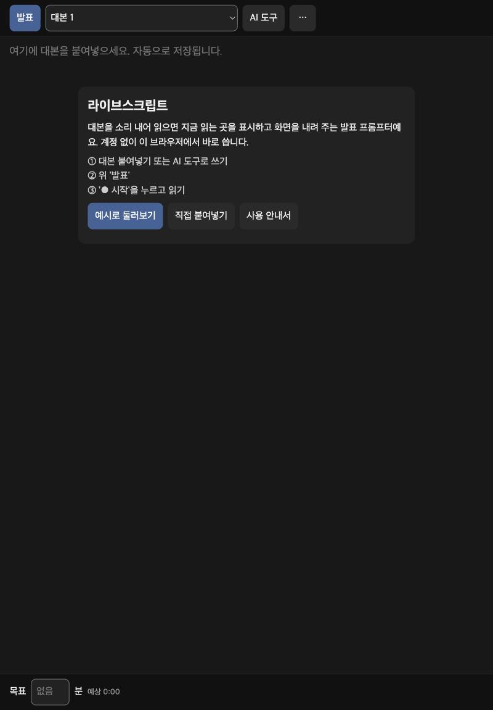
처음 연 편집 화면. 안내 카드에 '예시로 둘러보기', '직접 붙여넣기', '사용 안내서'가 있고, 맨 아래 줄은 목표 '없음', 예상 0:00입니다. -
'예시로 둘러보기'를 누르세요
'예시: 라이브스크립트 소개' 대본이 새 대본으로 열리고 아래에 안내가 뜹니다. 맨 아래 예상 4:11 (+1:11)은 이 대본을 읽는 데 4분 11초쯤 걸려서 목표 3분보다 1분 11초 길다는 뜻입니다.
안내에서 말하는 'Q&A' 화면 맨 아래 '판정 모델 받기'는 약 135MB를 받으니 와이파이에서만 누르세요(판정 모델). 받지 않아도 질의응답은 됩니다.
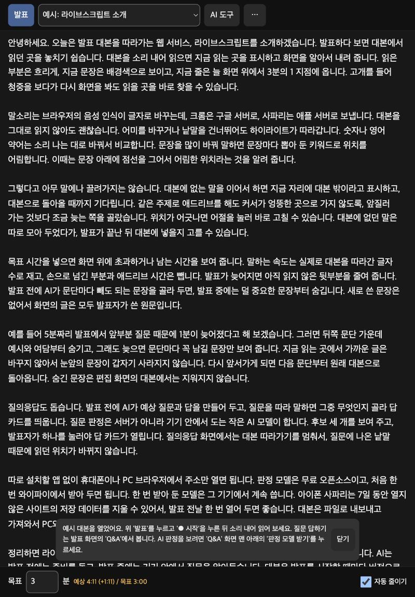
예시 대본을 연 직후. 아래 안내는 '닫기'나 '● 시작'을 누르거나 발표 화면에서 어절을 누르면 사라집니다. iPad 폭에서는 맨 아래 줄에 '/ 목표 3:00'도 같이 보입니다. -
위 '발표'를 누르고 줄일지 고르세요
'발표'를 누르면 대본이 목표보다 길 때 '목표 시간보다 길어요' 창이 뜹니다. 흐린 취소선 글이 뺄 문장입니다.
- '줄인 대본으로 시작': 이 문장들을 빼고 시작합니다. 예시에서는 예상 2:43이 됩니다.
- '원문 그대로 시작': 대본 전체로 시작합니다.
어느 쪽을 골라도 편집 화면의 대본은 그대로입니다. 자세한 동작은 시간 맞추기와 자동 줄이기에 있습니다.
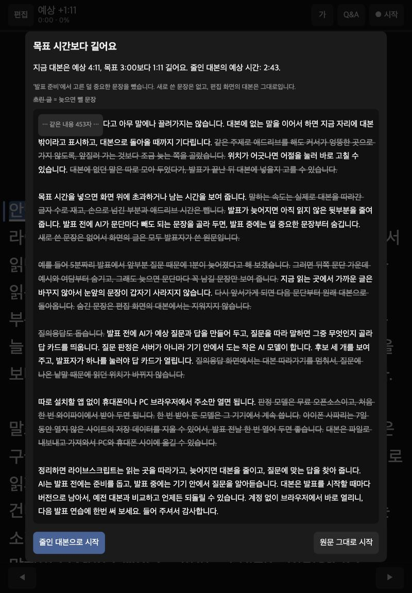
'목표 시간보다 길어요' 창. 미리 보기 맨 앞의 '… 같은 내용 453자 …'를 누르면 접어 둔 앞부분이 보입니다. -
'● 시작'을 누르세요
발표 화면의 첫 어절 '안녕하세요.'에 파란 배경이 있고, 그 줄 왼쪽 끝에 파란 세로 막대(읽는 줄 표시)가 있습니다. 오른쪽 위 '● 시작'을 누르세요. Safari가 마이크 사용을 물으면 '허용'을 누르세요. 허용하기 전에는 버튼이 점선 테두리의 '연결 중'이나 '다시 듣기'로 바뀔 수 있습니다. 허용한 뒤 말할 때 '정지' 앞 원이 채워지고 아래 줄에 들은 말이 보이면 듣고 있는 것입니다.
아래 줄에 “마이크 권한을 허용해 주세요”가 나오면 문제 해결을 보세요. “음성 인식이 꺼져 있어요”가 나오면 설정›일반›키보드›받아쓰기를 켜고 '● 시작'을 다시 누르세요.
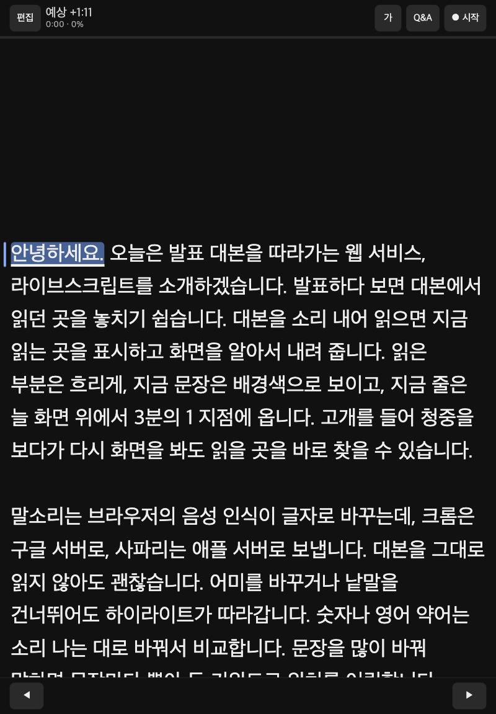
'원문 그대로 시작'을 고른 발표 화면. 맨 위 '편집' 오른쪽의 회색 '예상 +1:11'은 대본 전체를 읽으면 목표보다 1분 11초 길다는 뜻입니다. '줄인 대본으로 시작'을 골랐으면 '예상 -0:17'로 보입니다. 예시 안내가 아직 아래에 떠 있으면 '● 시작'을 누를 때 사라집니다. -
소리 내어 읽으세요
읽는 대로 지금 문장에 파란 배경이, 지금 어절에 흰 밑줄이 생기고 화면이 따라 내려갑니다. 위치가 어긋나면 읽을 어절을 누르세요. 첫 문단(30초쯤)만 읽어 보고 '정지'를 누르세요.
질문 답하기는 위 'Q&A'를 눌러 해 볼 수 있습니다(질의응답).
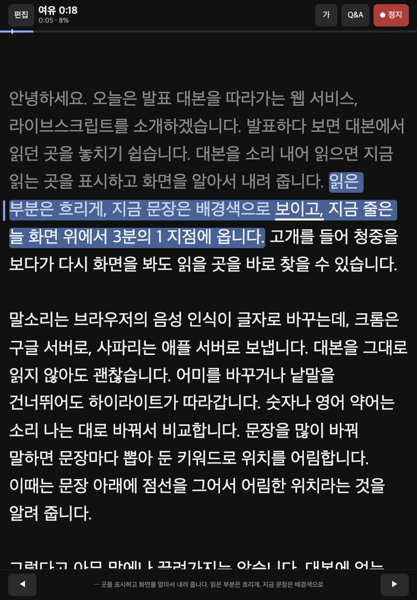
읽는 중. 읽은 글은 흐리고, 지금 문장은 파란 배경, 지금 어절 '보이고,'에는 흰 밑줄이 있습니다. 맨 위 가는 막대가 진행 막대입니다.
내 대본으로 시작하기
- 발표 화면이면 왼쪽 위 '편집'을 누르세요.
- 위 대본 고르기 상자에서 '대본 1'을 고르거나, 맨 아래 '＋ 새 대본'을 고르고 이름을 넣으세요.
- 다른 앱에서 대본을 복사한 뒤 큰 칸을 길게 누르고 '붙여넣기'를 누르세요. 저장 버튼은 없고, 칠 때마다 저장됩니다.
- 발표 시간이 정해져 있으면 아래 '목표'에 분을 넣으세요.
- '발표'를 누르고 '● 시작'을 누르세요.
발표 직전 확인
발표 전날에는 발표에 쓸 iPad로 처음부터 끝까지 리허설하고, '⋯' 메뉴의 '파일로 내보내기'로 대본을 받아 두세요. 발표 직전에는 아래 순서로 확인하세요.
- '편집'을 눌러 위 상자에 내 대본 이름이 있는지 보고 '발표'를 누르세요.
- 첫 어절을 누르세요. 리모컨이나 키보드를 쓰면 →나 Page Down을 한 번 눌러 둘째 문장으로 넘어가는지 보고, ←나 Page Up을 눌러 첫 문장으로 돌아오세요.
- 첫 어절에 흰 밑줄이 있고 글자가 흐리지 않은지 보세요. 첫 어절에서 '● 시작'을 눌러야 시간을 새로 잽니다. 중간에서 누르면 연습 때 시간과 애드리브에 이어서 셉니다. 새로 시작하면 지난 애드리브와 인식 기록이 지워지니, 남길 것이 있으면 먼저 정리하거나 편집 화면 '⋯' 메뉴의 '인식 기록 내려받기'로 받아 두세요.
- 와이파이가 연결되어 있는지 보세요. 음성 인식은 인터넷이 있어야 합니다.
- 블루투스 이어폰이 연결되어 있으면 이어폰 마이크로 소리를 받을 수 있습니다. iPad 마이크를 쓰려면 연결을 끊으세요.
- 설정›디스플레이 및 밝기›자동 잠금을 '안 함'이나 발표 시간보다 긴 값으로 바꾸세요.
- 제어 센터(화면 오른쪽 위 모서리에서 아래로 쓸어 내리기)에서 방해 금지를 켜고 화면 회전 잠금을 켜세요. 알림이 맨 위 버튼을 가리지 않고, 거치대에 세운 방향 그대로 화면이 고정됩니다.
- 충전기를 연결하거나 배터리를 넉넉히 채우세요.
- 세로로 세우면 한 화면에 줄이 더 많이 보이고, 가로로 세우면 폭이 1100px 이상인 기종에서 오른쪽에 애드리브 칸이 생깁니다. 리허설한 방향 그대로 세우세요.
- 프로젝터에 iPad 화면을 미러링하면 대본도 청중에게 보입니다. 슬라이드는 다른 기기로 띄우세요.
- 이제부터 대본은 고치지 마세요. 한 글자만 고쳐도 위치와 시간이 처음으로 돌아갑니다.
발표 중에 음성 인식이 안 되면 '◀' '▶', 리모컨, 어절 누르기로 넘기며 그대로 발표하세요.
대본 준비
대본 넣기
- 편집 화면의 큰 칸에 붙여넣거나 직접 쓰세요. 칠 때마다 이 Safari에 저장됩니다.
- 문단 사이에는 빈 줄을 두세요. 자동 줄이기와 '발표 준비'(시간 맞추기)는 문단 단위로 동작합니다. 빈 줄이 하나도 없으면 줄마다 한 문단으로 봅니다.
- 대본을 AI로 쓰거나 고치려면 위 'AI 도구'를 누르세요(AI 기능과 키).
- AI에는 자료로 확인하지 못한 사실에 '[확인 필요]'를 붙이라고 요청합니다. 표시가 빠질 수도 있으니 숫자와 사실은 모두 직접 확인하세요. 이 표시가 남아 있으면 '발표'를 누를 때 확인 창이 뜹니다.
대본 여러 개 쓰기
- 편집 화면 위 대본 고르기 상자에서 대본을 바꾸세요. 맨 아래 '＋ 새 대본'을 고르면 이름을 묻고 빈 대본을 만듭니다. 이름은 40자까지입니다.
- 목표 시간, 질문, 버전, 발표 준비 결과, 애드리브는 대본마다 따로 저장됩니다.
- 이름을 바꾸려면 '⋯' 메뉴에서 '이름 바꾸기'를 누르세요.
- 지우려면 '⋯' 메뉴 맨 아래 '대본 삭제'를 누르세요. 그 대본의 버전 기록까지 지워지고 되돌릴 수 없습니다. 마지막 대본을 지우면 빈 '대본 1'이 새로 생깁니다.
- '예시 대본 열기'는 예시 대본을 새 대본으로 한 번 더 엽니다.
- '사용 안내서'는 이 안내서를 새 탭으로 엽니다.
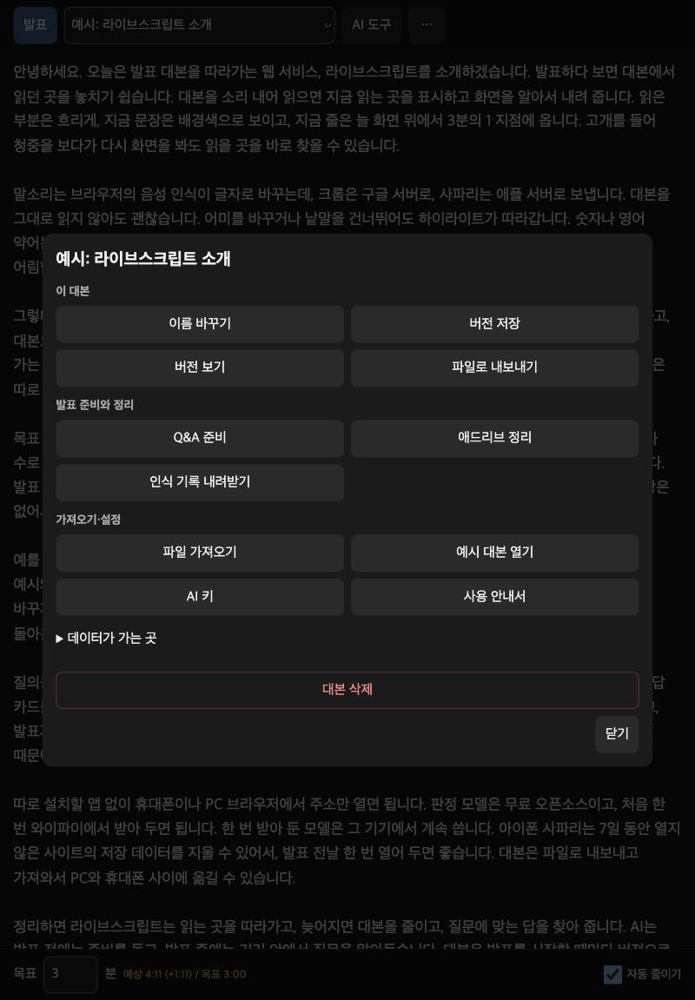
목표 시간과 예상 시간
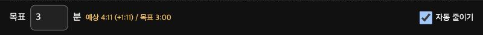
- 편집 화면 아래 '목표' 칸에 분을 넣으세요. 1에서 600까지이고, 2.5처럼 소수도 됩니다.
- '예상'은 소리 내어 읽는 글자 수로 계산한 발표 시간입니다. 공백, 문장부호, '[확인 필요]'는 빼고, 숫자와 영어 약어는 읽는 소리로 셉니다(2026은 '이천이십육', AI는 '에이아이').
- 예상이 목표보다 길면 넘는 시간이 주황색으로 붙습니다. iPad처럼 폭이 넓은 화면에서는 '/ 목표 3:00'처럼 목표도 같이 보입니다.
- 말 속도는 처음에 1초에 5글자로 잡습니다. 발표에서 1분 넘게 대본을 따라 읽으면 그 발표에서 잰 속도 쪽으로 바뀌고(처음 값 5글자와 조금 섞어 셉니다), 이 기기의 모든 대본에 같이 씁니다. 손으로 넘긴 부분, 애드리브, 질의응답 시간은 속도 계산에서 뺍니다.
- 목표를 넣으면 '자동 줄이기' 체크가 나타납니다(시간 맞추기와 자동 줄이기).
버전 기록
대본이 바뀌기 전 모습을 대본마다 최근 30개까지 남깁니다.
- 저절로 남는 때와 목록에 보이는 이름은 다음과 같습니다. 바로 앞 버전과 내용이 같으면 새로 만들지 않습니다.
- 발표 화면에 들어갈 때: '발표 시작'
- AI 결과를 적용하기 전: 'AI 적용 전'
- 애드리브를 넣기 전: '애드리브 넣기 전'
- 버전을 되돌리기 전: '되돌리기 전'
- '다른 말'(AI 기능과 키)로 바꾸기 전: '다른 말 전'
- 직접 남기려면 '⋯' 메뉴의 '버전 저장'을 누르세요.
- 보려면 '⋯' 메뉴의 '버전 보기'를 누르세요. 목록에서 버전을 누르면 그 버전과 지금 대본의 차이가 보입니다. 더한 말은 초록, 지운 말은 빨강입니다. 같은 내용이 길면 '… 같은 내용 N자 …'로 접혀 있고, 누르면 나머지가 보입니다.
- '이 버전으로 되돌리기'를 누르면 지금 대본을 '되돌리기 전' 버전으로 남긴 뒤 고른 버전으로 바꿉니다.
- 저장 공간이 모자라면 오래된 버전부터 지우고 알려 줍니다.
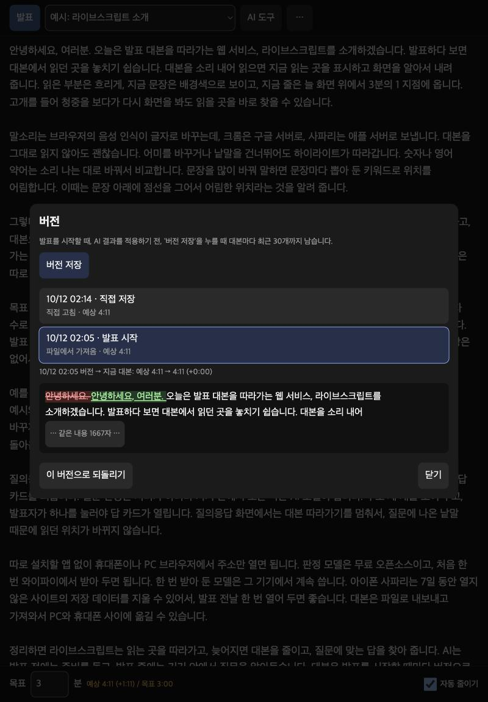
파일로 옮기기
- '⋯' 메뉴의 '파일로 내보내기'를 누르면 '대본 이름.livescript.json' 파일을 받습니다. 대본, 목표 시간, 발표 정보, 질문, 발표 준비 결과가 들어가고, 버전, 애드리브, 발표 시간 기록, '자동 줄이기' 켜짐 상태는 들어가지 않습니다. iPad Safari가 받은 파일은 파일 앱에서 찾을 수 있습니다. Safari가 다운로드할지 물으면 '다운로드'를 누르세요. 받은 파일은 처음 설정으로는 iCloud Drive의 '다운로드' 폴더에 저장되어 iCloud에도 올라갑니다. iPad에만 두려면 설정›앱›Safari›다운로드에서 '나의 iPad'를 고르세요(iPadOS 17 이하: 설정 › Safari › 다운로드). iPad에서 받아 보지는 않았습니다.
- '⋯' 메뉴의 '파일 가져오기'로 .json이나 .txt 파일(2MB까지)을 여세요. 가져온 파일은 늘 새 대본으로 더해지고, 이름이 겹치면 ' (2)'처럼 번호가 붙습니다. .txt 파일은 파일 이름이 대본 이름이 됩니다.
- PC에서 대본과 질문을 준비해 내보내고, AirDrop, iCloud Drive, 메일 같은 방법으로 iPad에 옮긴 뒤 '파일 가져오기'로 열면 iPad에서 AI를 다시 쓰지 않아도 됩니다. 가져온 대본은 '자동 줄이기'가 꺼진 채로 열리니 편집 화면 아래 '자동 줄이기'를 다시 켜세요. 판정 모델을 쓰려면 iPad에서도 한 번 받으세요.
- 'Q&A 준비' 창(질의응답)의 '내보내기'로 받은 qa-pack.json은 질문만 든 파일입니다. 이 파일은 'Q&A 준비' 창의 '가져오기'로 여세요.
발표 화면 구성
대본이 있으면 앱을 열 때 바로 발표 화면이 열립니다. 편집 화면은 왼쪽 위 '편집'을 누르면 나옵니다.
맨 위 줄
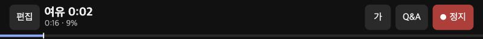
| 자리 | 하는 일 |
|---|---|
| '편집' | 편집 화면으로 갑니다. 듣는 중이면 멈출지 먼저 묻습니다. |
| 상태줄('편집' 오른쪽 시간 표시. iPad 맨 위의 시계·배터리 줄과는 다릅니다) | 시간과 진행을 두 줄로 보여 줍니다. 아래 표를 보세요. |
| '가' | 글자 크기, 글 폭, 전체 화면을 바꿉니다('가' 보기 설정). |
| 'Q&A' | 질의응답 화면을 엽니다. 진행률이 95% 이상이면 연한 파란색으로 강조됩니다. |
| 마이크 버튼 | 듣기를 시작하고 멈춥니다. 상태에 따라 글자가 바뀝니다. |
상태줄
| 상황 | 위 큰 글 | 아래 작은 글 |
|---|---|---|
| 목표 없음 | 경과 시간 1:23 | 진행률 45% |
| 목표 있음, 시작 전 | 회색 예상 +0:20 또는 예상 -0:17 | 경과 · 진행률 |
| 목표 있음, 발표 중 | 여유 1:05 또는 주황 초과 0:04 | 경과 · 진행률 |
| 질의응답 중 | 질의응답 0:25 | 멈춘 발표 경과 · 진행률 |
- '여유'와 '초과'는 지금 말 속도로 남은 대본을 다 읽으면 목표보다 얼마나 일찍 또는 늦게 끝날지 미리 계산한 값입니다.
- iPad에서는 아래 작은 글에 경과와 진행률이 같이 보입니다. 창 폭이 520px 이하이면 진행률 글이 숨고 진행 막대로만 보입니다.
- 경과 시간은 대본 끝에 닿거나 'Q&A'를 누르면 멈춥니다. 질의응답 시간은 발표 경과에 넣지 않습니다.
- 30분 넘게 쉬었다가 이어 하면 쉰 시간은 경과에서 뺍니다.
- 대본 처음에서 '● 시작'을 누르면 새 발표로 보고 시간을 처음부터 잽니다.
진행 막대
파랗게 채운 폭이 읽은 만큼(진행률)이고, 늦어지면 주황색이 됩니다. 흰 세로 눈금은 목표 시간에 맞추려면 지금 있어야 할 자리(경과 시간 ÷ 목표 시간)입니다. 채운 끝이 눈금보다 오른쪽에 있으면 목표보다 빠르게 가고 있는 것입니다. 눈금은 목표가 있고 발표를 시작했을 때만 보입니다.
대본 부분
- 읽은 글회색으로 흐려집니다.
- 지금 문장파란 배경으로 보입니다.
- 지금 어절과 읽는 줄 표시지금 어절('보이고,')에 흰 밑줄이 있고, 그 줄 왼쪽 끝에 파란 세로 막대가 있습니다. 지금 줄은 늘 화면 위에서 3분의 1 지점에 옵니다.
- 아직 읽지 않은 글흰 글자 그대로입니다.
- 들은 말음성 인식이 알아들은 말의 끝부분입니다. 오류와 안내 글도 이 자리에 나옵니다. 양옆 버튼은 '◀'(이전 문장)와 '▶'(다음 문장)입니다.
문장을 많이 바꿔 말해서 글자 비교가 맞지 않으면, 앱은 문장마다 뽑아 둔 키워드로 위치를 짐작합니다. 이때는 문장 전체에 흰 점선 밑줄을 그어 짐작한 위치라는 것을 알립니다.
마이크 버튼
| 버튼 | 뜻 | 할 일 |
|---|---|---|
| '● 시작' | 듣지 않는 중 | 누르면 듣기 시작 |
| ● 정지 원이 채워짐 | 듣는 중이고 방금(1.5초 안에) 알아들은 말이 있음 | 누르면 정지 |
| ○ 정지 원이 비어 있음 | 듣는 중이지만 조용함 | 누르면 정지 |
| '연결 중' (점선 테두리) | 음성 인식이 잠깐 끊겨 다시 켜는 중 | 기다리면 대개 저절로 돌아옵니다(음성 인식이 끊겼을 때) |
| '다시 듣기' (점선 테두리) | 4초 넘게 다시 켜지지 못함 | 누르세요. 정지하지 않고 인식만 다시 켭니다 |
| '준비 중' | 질의응답용 판정 모델(판정 모델)을 불러오는 중 | PC에서는 2초 안팎이었고 iPad에서는 재 보지 않았습니다. 질문(바꿔 묻는 말 포함)을 고치거나 다른 대본으로 바꾼 뒤 처음에는 질문을 다시 계산하느라 수십 초 걸릴 수 있으니 발표 전에 발표 화면을 한 번 열어 두세요 |
대본 밖 상태
대본에 없는 말을 3초 넘게 이어 하면 '대본 밖' 상태가 됩니다.
- 지금 문장의 파란 배경이 빠지고, 지금 어절 아래에 하늘색 점선이 생기며, 읽는 줄 표시도 하늘색이 됩니다.
- 아래 줄에 하늘색 굵은 글 대본 밖 · 돌아오면 이어 가요가 나옵니다.
- 커서는 그 자리에서 기다립니다. 대본으로 돌아와 읽으면 다시 따라갑니다.
- 손으로 옮긴 직후 3초 동안과, 쉬었다가 다시 말한 첫마디는 대본 밖으로 보지 않습니다.
- 이때 한 말은 애드리브로 모입니다(애드리브 정리).
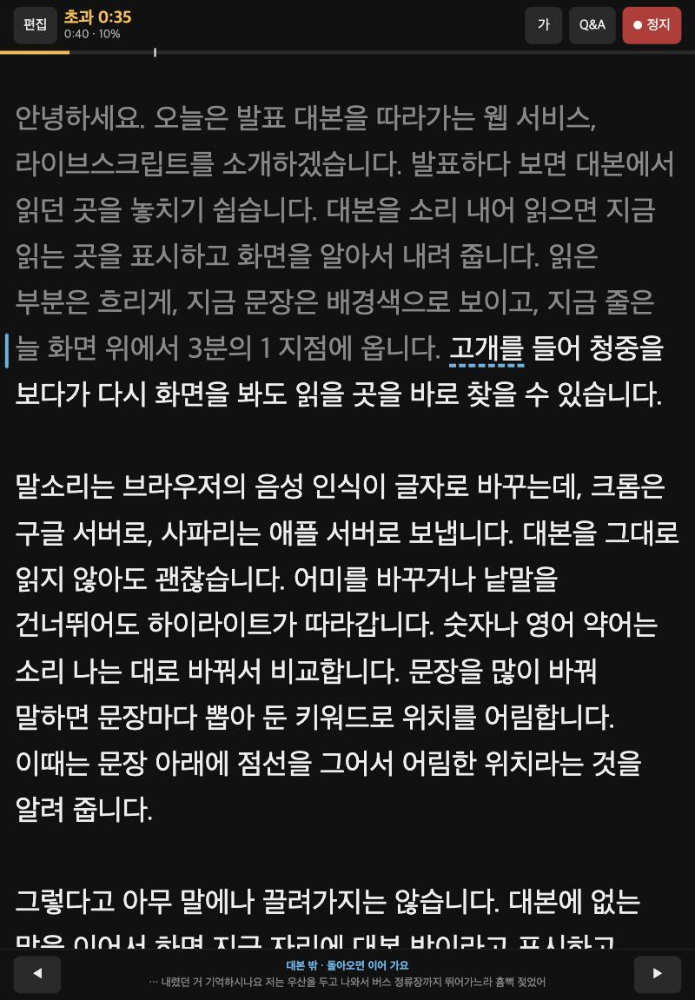
발표 중 조작
문장 단위로 옮기기
- '◀': 지금 문장 처음으로 갑니다. 이미 문장 처음이면 앞 문장 처음으로 갑니다.
- '▶': 다음 문장 처음으로 갑니다.
어절을 눌러 옮기기
위치가 어긋났으면 지금 읽을 어절을 누르세요. 그 자리로 옮기고, 5초 동안 '여기로 옮겼어요'와 '되돌리기'가 보입니다.
- 잘못 눌렀으면 5초 안에 '되돌리기'를 누르세요. 여러 번 잇달아 눌렀어도 처음 누르기 전 자리로 돌아갑니다.
- 거치대에 세운 iPad는 손바닥이 화면에 스쳐 위치가 옮겨지기도 합니다. 그럴 때도 '되돌리기'로 돌아가세요.
- '◀' '▶'로 옮길 때는 이 막대가 뜨지 않습니다.
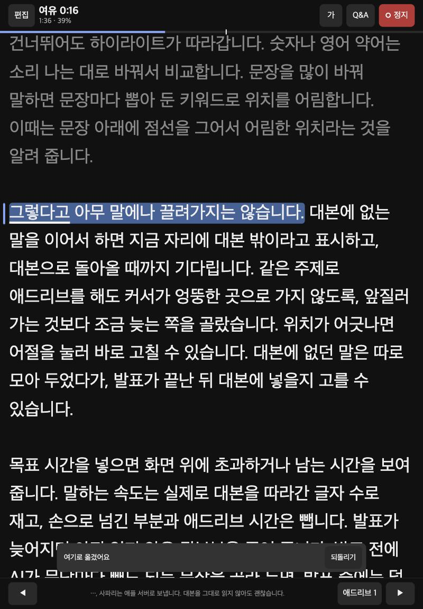
키보드와 발표 리모컨
| 키 | 동작 |
|---|---|
| → 또는 Page Down | 다음 문장('▶'와 같음) |
| ← 또는 Page Up | 이전 문장('◀'와 같음) |
| Space | 시작·정지. '다시 듣기'가 보일 때는 정지하지 않고 다시 듣기 |
- iPad에 블루투스로 연결한 키보드와, Page Up·Page Down이나 방향키를 보내는 발표 리모컨에서 같은 키로 씁니다. 리모컨 대부분은 Page Up·Page Down을 보냅니다.
- 발표 화면에서만 동작합니다. 편집 화면, 질의응답 화면, 입력칸이나 열린 창 안에서는 동작하지 않습니다.
- 마이크 버튼이 '준비 중'일 때는 Space가 동작하지 않습니다.
- 실제 iPad에서, 특히 전체 화면에서 키가 들어오는지는 아직 확인하지 않았습니다. 발표 전에 한 번 눌러 보세요.
'가' 보기 설정
- '글자 크기': '가−'와 '가+'로 2씩 바꿉니다. 16에서 64까지입니다. 처음 값은 iPad 같은 태블릿(터치 화면이면서 화면 짧은 변이 600px 이상)이 34, 휴대폰과 PC가 28입니다. 실제 iPad에서 34로 시작하는지는 확인하지 않았으니, 다르면 '가−' '가+'로 맞추세요. 질의응답 답 카드 글자도 이 크기를 따릅니다.
- '글 폭': '좁게', '보통'(처음 값), '넓게'. 세로 iPad에서 글자 크기가 34쯤이면 '보통'과 '넓게'가 모두 화면 폭을 거의 다 써서 둘의 차이가 작습니다. 줄을 짧게 하려면 '좁게'를 고르세요.
- '화면': '전체 화면'. 아래 전체 화면을 보세요.
- 글자 크기와 글 폭은 이 기기의 모든 대본에 같이 적용됩니다.
- '보기' 창은 바깥을 어둡게 가리지 않아서, 위쪽 대본에서 바뀐 크기와 폭을 바로 확인할 수 있습니다. '닫기'나 창 바깥(위쪽이나 양옆)을 누르면 닫힙니다.
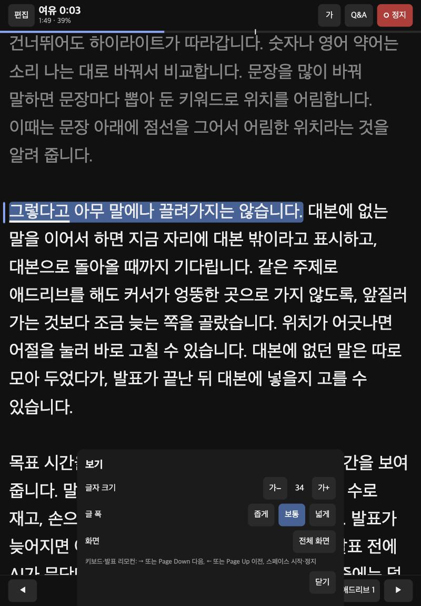
전체 화면
- '가' 창의 '전체 화면'은 Safari 주소 막대를 숨겨 대본을 더 보여 주려고 둔 버튼입니다. 한 번 더 누르면 풀리게 만들었습니다.
- 브라우저가 전체 화면을 지원할 때만 '화면' 줄이 보입니다.
- 편집 화면으로 가면 전체 화면이 풀립니다. iPad는 전체 화면에서 글자 입력을 막는다고 알려져 있기 때문입니다. 같은 이유로 전체 화면에서는 키보드·리모컨 키가 들어오지 않을 수 있으니, 리모컨을 쓰려면 전체 화면에서 미리 눌러 보세요.
- 켜지지 않으면 주소 막대가 그대로 보입니다. '보기' 창을 바로 닫으면 화면 아래에 “전체 화면으로 바꾸지 못했어요.”가 잠깐 보일 수 있습니다.
- 전체 화면은 실제 iPad에서도, 사진을 찍은 데스크톱 브라우저에서도 켜 보지 않았습니다. 위 '보기' 창 사진은 버튼이 보이는 것만 보여 줍니다.
음성 인식이 끊겼을 때
Safari의 음성 인식은 발표 중에 저절로 끝나기도 한다고 알려져 있습니다(iPad에서 재 보지는 않았습니다). 앱은 듣는 중이면 곧바로 다시 켭니다.
- 다시 켜는 틈이 0.7초를 넘으면 마이크 버튼이 점선 테두리의 '연결 중'으로 바뀝니다. 대개 저절로 돌아옵니다.
- 4초가 지나도 돌아오지 않으면 '다시 듣기'로 바뀝니다. iPad Safari는 화면을 누르지 않으면 인식을 다시 켜지 못할 때가 있다고 해서 이 버튼을 두었습니다. '다시 듣기'나 Space를 누르세요. 정지하지 않고 인식만 다시 켜서 위치와 시간은 그대로입니다.
- 리허설 때 '다시 듣기'가 자주 보이면 인터넷 연결을 확인하세요.
편집 화면에 다녀오기
- '편집'을 누르면 편집 화면으로 갑니다. 듣는 중이면 “발표를 멈추고 편집 화면으로 갈까요? …”를 묻습니다.
- 대본을 고치지 않고 '발표'로 돌아오면 그 위치에서 이어 할 수 있습니다.
주의
대본을 한 글자라도 고치면 위치가 처음으로 돌아가고, 발표 시간도 처음부터 잽니다. 발표 직전에는 대본을 고치지 마세요.
화면 꺼짐과 새로고침
- 발표 화면에 있는 동안은 화면이 꺼지지 않게 Safari에 요청합니다. 정지하고 차례를 기다릴 때와 질의응답 중에도 그렇습니다. 다른 탭이나 앱에 다녀오면 다시 요청합니다.
- iPad에서 이 요청이 통하는지는 아직 확인하지 않았습니다. 발표 전에 설정›디스플레이 및 밝기›자동 잠금에서 시간을 늘려 두세요.
- 새로고침해도 대본, 위치, 경과 시간이 이어집니다. 마이크는 '● 시작'을 다시 눌러야 켜집니다. Safari가 마이크를 다시 물으면 '허용'을 누르세요.
- 앱은 화면을 아래로 당겨 새로고침하는 동작을 막아 두었습니다. iPad Safari에서 실제로 막히는지는 확인하지 않았습니다.
- 기기를 돌릴 때의 동작은 화면 방향과 멀티태스킹에 있습니다.
대본 끝
대본 끝에 닿으면 경과 시간이 멈추고 애드리브도 더 모으지 않습니다. 듣기는 계속됩니다. 정지한 뒤 다시 '● 시작'을 누르면 “대본 끝이에요. 처음부터 다시 할까요?”를 묻습니다.
시간 맞추기와 자동 줄이기
목표 시간을 넣으면 발표 화면이 남는 시간과 넘는 시간을 알려 줍니다. '자동 줄이기'를 켜 두면 늦어질 때 덜 중요한 문장을 발표 화면에서 숨깁니다. 숨길 문장은 발표 전에 '발표 준비'로 미리 정해 두고, 발표 중에는 AI(Claude)에 요청하지 않습니다.
준비 순서
- 대본을 다 쓴 뒤 편집 화면 아래 '목표'에 분을 넣으세요.
- 'AI 도구'를 누르고 '발표 준비' 탭을 고르세요.
- '발표 준비 하기'를 누르세요. 키가 없으면 '프롬프트 복사'를 누르세요. 아래에 붙여넣을 칸이 열리면 챗봇이 돌려준 답을 그 칸에 붙여넣고 '적용'을 누르세요.
- “발표 준비를 저장했어요. …”가 나오면 '닫기'로 창을 닫고 편집 화면 아래 '자동 줄이기'를 켜세요.
- '발표'를 누르세요. 원문이 목표보다 길면 '목표 시간보다 길어요' 창이 뜹니다.
예시 대본에는 목표 시간(3분)과 발표 준비 결과가 들어 있고 '자동 줄이기'도 켜져 있어서 1~4단계가 필요 없습니다.
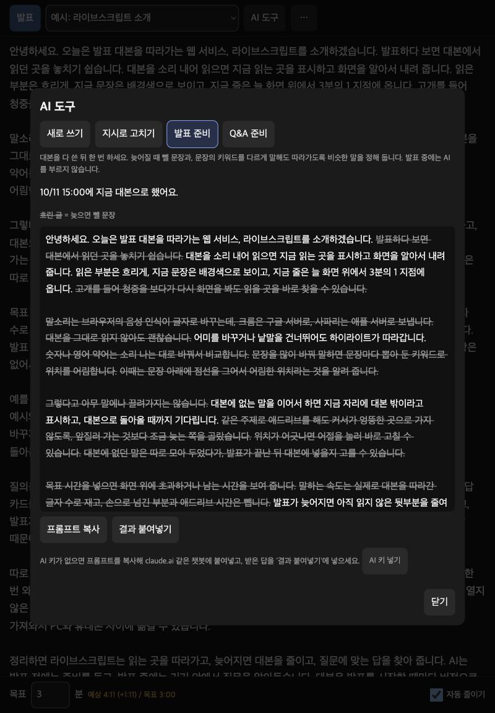
'발표 준비'가 정하는 것
- 문단마다 중요도: 1은 빼면 발표 목적이 무너지는 문단, 2는 보통, 3은 예시나 여담입니다.
- 문단마다 꼭 남길 문장 1~2개와 늦으면 뺄 문장.
- 키워드마다 다른 말 1~4개. 발표에서 키워드를 다른 낱말로 말해도 따라가게 합니다.
- AI는 원문 문장 가운데서 고르기만 하고 새 문장은 쓰지 않습니다. 다음 문장이 '그래서', '이처럼'처럼 앞 문장을 가리키면 그 앞 문장은 빼지 않습니다.
대본을 고친 뒤에도 문단 수와 문장 수가 같으면 결과를 그대로 씁니다. 문단이나 문장 수가 바뀌면 '발표 준비'를 다시 해야 자동 줄이기가 동작합니다. 이때 “자동 줄이기는 지금 대본으로 한 '발표 준비' 결과가 있어야 해요. …” 알림이 나옵니다.
시작할 때 고르기
'목표 시간보다 길어요' 창(빠른 시작 3단계 그림)에서 고르세요.
- '줄인 대본으로 시작': 앞으로 처음부터 발표할 때마다 줄인 대본으로 시작합니다.
- '원문 그대로 시작': 대본 전체로 시작합니다. '자동 줄이기'는 켜진 채라서, 발표 중에 늦어지면 그때 줄입니다.
- 다 줄여도 목표를 넘으면 창의 안내 글 끝에 “다 줄여도 m:ss 넘어요.”가 붙습니다.
- 한 번 고르면 같은 대본과 같은 발표 준비 결과로는 다시 묻지 않습니다. 다시 고르려면 '자동 줄이기'를 껐다 켜세요.
- 이 창은 대본 처음 위치에서 발표 화면에 들어갈 때만 뜹니다.
발표 중에 줄어드는 방식
- 지금 읽는 문단이 바뀔 때마다, 그리고 대본 밖 말을 하다가 대본으로 돌아왔을 때 남은 시간을 다시 계산합니다. 목표보다 10초 일찍 끝나도록 맞춥니다.
- 줄이는 단계는 둘입니다. '줄임'은 뺄 문장을 숨기고, '요약'은 꼭 남길 문장만 남깁니다. 줄인 문단 왼쪽에는 파란 세로선과 '줄임' 또는 '요약' 표시가 붙습니다.
- 지금 위치에서 약 300글자(1분쯤) 안에서 시작하는 글은 줄이지도 되돌리지도 않습니다. 눈앞의 문장이 갑자기 바뀌지 않게 하려는 것입니다.
- 다시 시간이 남으면 아직 읽지 않은 뒷부분이 원문으로 돌아옵니다.
- 계산 단위는 문단입니다. 150자보다 짧은 문단은 다음 문단과 묶고, 600자보다 긴 문단은 약 300자씩 나눕니다.
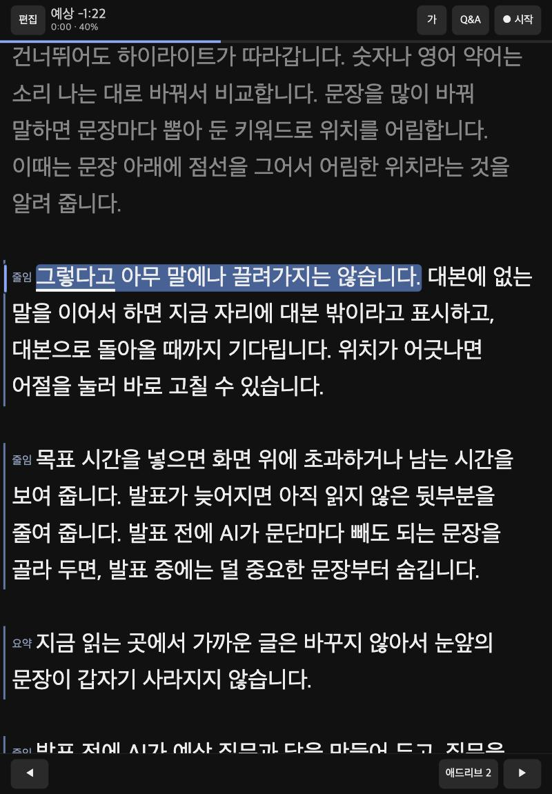
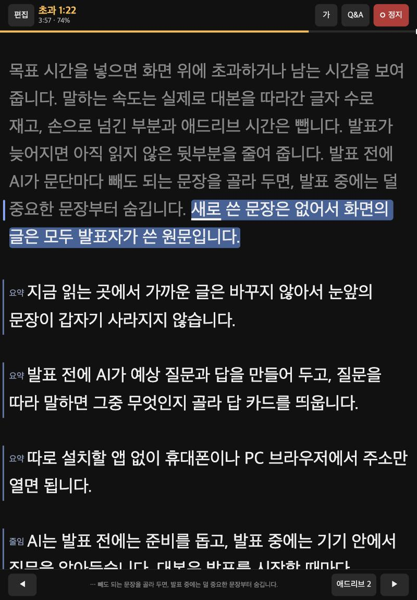
줄이는 순서는 다음과 같습니다. 같은 순서 안에서는 뒤쪽 문단부터 줄입니다.
| 순서 | 줄이는 것 |
|---|---|
| 1 | 중요도 3 문단을 '줄임' |
| 2 | 중요도 3 문단을 '요약', 중요도 2 문단을 '줄임' |
| 3 | 중요도 2 문단을 '요약', 중요도 1 문단을 '줄임' |
첫 문단, 마지막 문단, 중요도 1 문단은 '줄임'까지만 갑니다.
바뀌지 않는 것
- 편집 화면의 대본은 바뀌지 않습니다. 숨긴 문장은 발표 화면에서만 빠집니다.
- 새로 쓴 문장은 없습니다.
- 발표 중에는 AI(Claude)에 요청하지 않습니다.
- 질의응답 중과 대본 밖 상태에서는 다시 계산하지 않습니다.
자동 줄이기가 동작하려면 듣는 중이고, 목표가 있고, '자동 줄이기'가 켜져 있고, 지금 대본에 맞는 발표 준비 결과가 있어야 합니다.
질의응답
발표가 끝나고 질문을 받을 때 씁니다. 미리 준비한 질문 목록에서 청중 질문과 가까운 후보 3개를 고르고, 발표자가 하나를 누르면 답 카드를 보여 줍니다. 후보를 고르는 계산은 iPad 안에서 하고, 앱이 질문 글을 따로 보내지는 않습니다. 다만 따라 말한 질문의 소리는 대본을 읽을 때처럼 Apple(Safari)로 가서 글자로 바뀝니다.
질문 준비
- 편집 화면 '⋯' 메뉴의 'Q&A 준비'를 누르세요. 'AI 도구'의 'Q&A 준비' 탭을 눌러도 같은 창이 열립니다.
- '주제', '청중', '질문 수'(1~40, 처음 값 20)를 확인하세요.
- 'AI로 만들기'를 누르세요. 키가 없으면 '프롬프트 복사'를 누르세요. 아래에 붙여넣을 칸이 열리면 챗봇이 돌려준 답 전체를 그 칸에 붙여넣고 '적용'을 누르세요.
- 만든 질문을 읽고 고치세요. 질문마다 '바꿔 묻는 말 (한 줄에 하나)'과 '답 (한 줄에 하나)'을 고칠 수 있고, '질문 추가'와 '삭제'로 늘리고 줄입니다.
- '저장'을 누르세요.
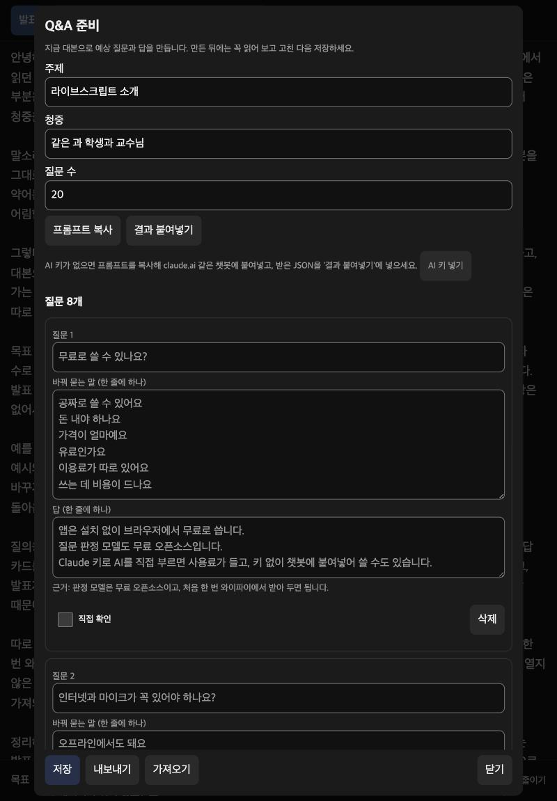
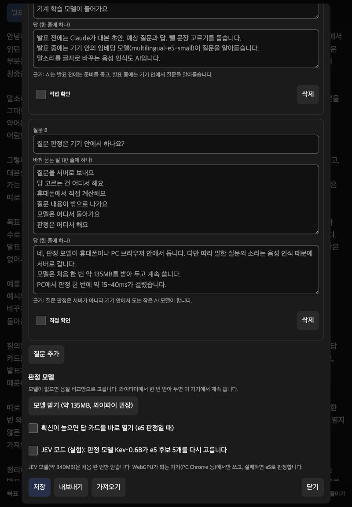
주의
'저장'을 눌러야 질의응답에 쓰입니다. 저장하지 않은 수정은 이 탭에만 남아 새로고침해도 이어지지만, '닫기'를 누르면 버릴지 묻습니다.
- AI에는 대본에 있는 내용만으로 답을 3줄 안에서 쓰고 근거가 된 대본 문장을 옮기라고 요청합니다. 그래도 틀린 답이 있을 수 있으니 저장하기 전에 모두 읽어 보세요. 대본만으로 답할 수 없는 질문은 '직접 확인'이 켜져 노란 테두리로 보이니, 이런 답은 내용을 확인해 고치세요.
- 질문은 60개, 바꿔 묻는 말은 질문마다 12개, 답은 6줄까지 저장합니다.
- '내보내기'는 질문만 qa-pack.json 파일로 받고, '가져오기'는 그 파일을 엽니다. 질문은 대본마다 따로 있고, 대본을 '파일로 내보내기'하면 같이 들어갑니다.
질문 받기
-
'Q&A'를 누르세요
발표 화면 위 'Q&A'를 누르면 질의응답 화면이 열리고 대본 따라가기가 멈춥니다. 그 버튼 글자는 '대본'으로 바뀝니다. 상태줄은 질의응답 0:00부터 셉니다.
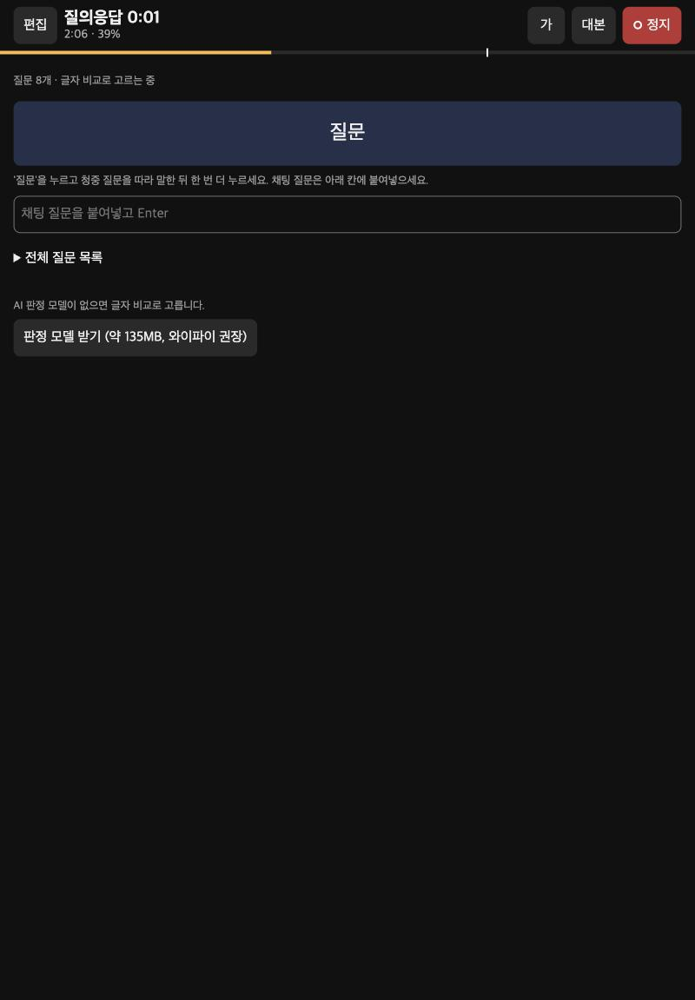
질문을 받기 전. 아래 작은 글 '2:06 · 39%'는 멈춘 발표 경과와 진행률입니다. 판정 모델이 없어서 '글자 비교로 고르는 중'으로 나옵니다. -
'질문'을 누르고 질문을 따라 말하세요
청중이 한 질문을 발표자가 소리 내어 따라 말하세요. 버튼이 빨간 '● 듣는 중 · 다시 누르면 고르기'로 바뀌고, 말하는 동안 후보가 계속 바뀌어 보입니다. 마이크가 꺼져 있었으면 저절로 켜집니다.
이때 보이는 후보를 바로 눌러도 답 카드가 열립니다.
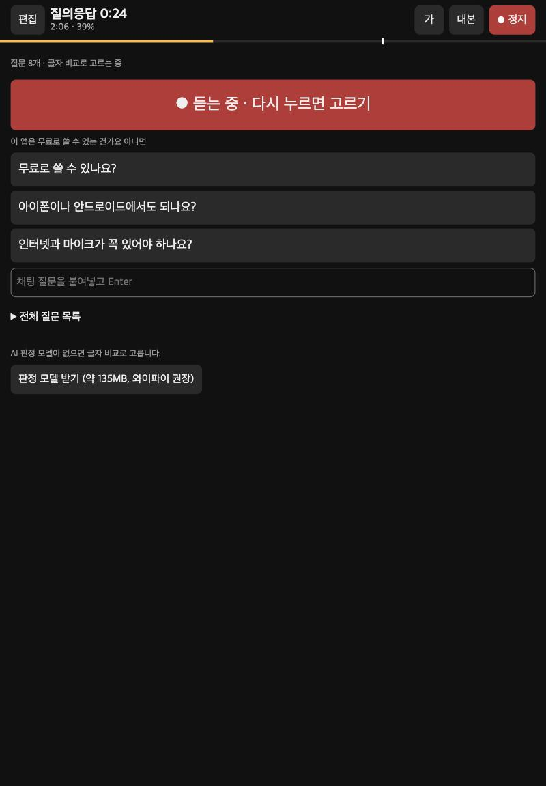
따라 말하는 중. 들은 말 '이 앱은 무료로 쓸 수 있는 건가요 아니면' 아래로 후보가 계속 바뀝니다. -
버튼을 한 번 더 누르세요
번호 1~3이 붙은 후보와 '해당 없음'이 나옵니다. 1순위에는 파란 테두리가 있습니다.
채팅으로 온 질문은 '채팅 질문을 붙여넣고 Enter' 칸에 붙여넣고 Enter(화면 키보드에서는 리턴 자리의 키로, '검색'이라고 보일 수 있습니다)를 누르면 같은 결과가 나옵니다. 칸을 누르면 글 전체가 선택되어, 붙여넣으면 앞 질문이 바로 바뀝니다.
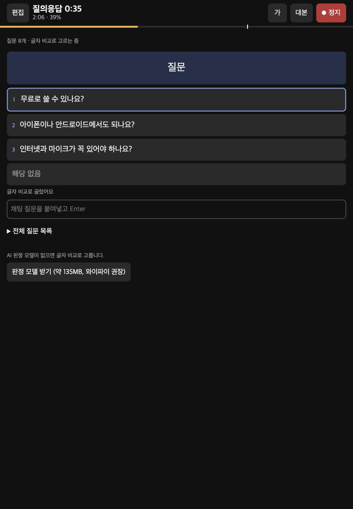
'질문'을 다시 누른 뒤. 번호 붙은 후보 3개와 '해당 없음'이 나오고, 1순위 '무료로 쓸 수 있나요?'에 파란 테두리가 있습니다. -
맞는 후보를 누르세요
답 카드가 열리고, 위 버튼은 작은 '다음 질문'으로 바뀝니다. 앱이 카드를 화면 위로 올려서 '다음 질문'은 위로 밀려 있습니다. 다음 질문을 받으려면 화면에 손가락을 대고 아래로 끌어 맨 위까지 올린 뒤 '다음 질문'을 누르세요. 발표 화면으로 돌아가려면 위 '대본'을 누르세요.
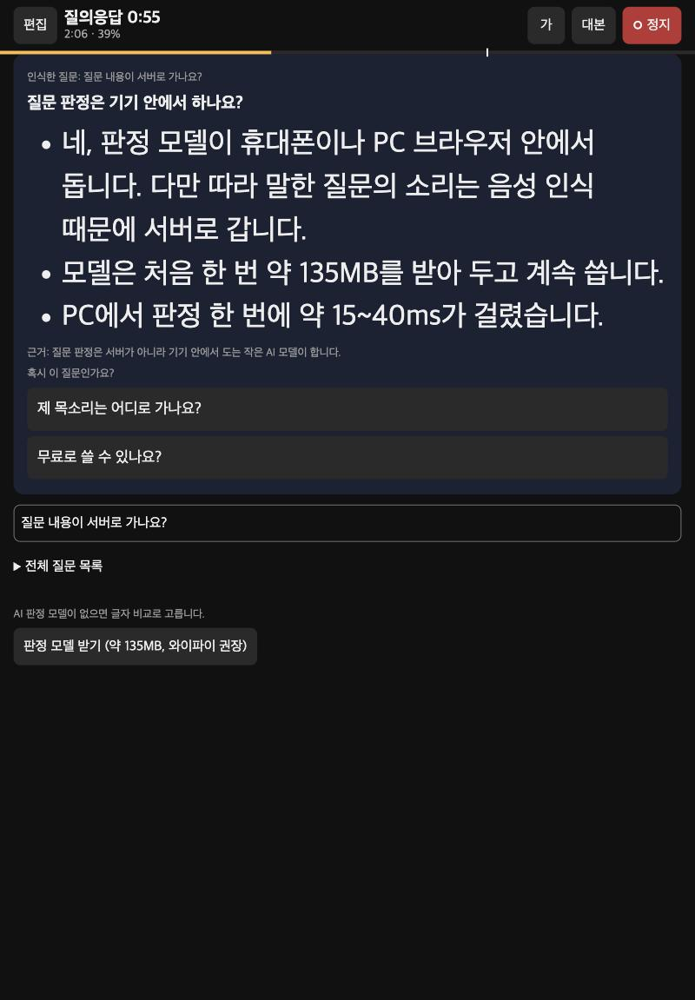
후보를 누른 직후(이 사진은 아래 채팅 질문 '질문 내용이 서버로 가나요?'의 후보 1을 누른 것입니다). 카드가 화면 위로 올라와 '다음 질문' 버튼은 보이지 않습니다.
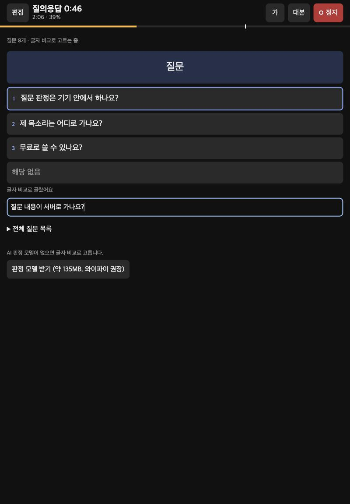
후보와 답 카드
- 후보 아래 글은 고른 방법입니다. '글자 비교로 골랐어요' 또는 'AI 판정 NNms · 이 기기 안'이 나옵니다. AI 판정이면 후보마다 ' · 유사도 0.xx'가 붙습니다.
- “확신 낮음: 맞는 질문이 없을 수도 있어요”가 보이면 1순위를 그대로 믿지 말고 후보를 모두 읽어 보세요.
- 맞는 후보가 없으면 '해당 없음'을 누르세요. '전체 질문 목록'이 열리고, '검색' 칸에 낱말을 치면 질문과 바꿔 묻는 말에서 찾습니다.
- 'Q&A 준비'에서 '직접 확인'이 켜진 질문(AI가 대본만으로 답할 수 없다고 본 질문 포함)의 카드에는 노란 '직접 확인'이 붙습니다. 답이 비어 있으면 “준비된 답이 없어요.”가 보입니다.
- 카드는 다음 질문을 시작할 때까지 바뀌지 않습니다. 카드 글자 크기는 '가'의 글자 크기를 따릅니다.
질의응답과 시간
- 상태줄 '질의응답 m:ss'는 질의응답 화면에 들어온 뒤 지난 시간이고, 아래 작은 글은 멈춘 발표 경과입니다. 질의응답 시간은 발표 경과에 넣지 않습니다.
- 질의응답 중에 한 말은 애드리브로 모으지 않고, 대본 위치도 움직이지 않습니다.
- 발표 전에 질의응답 화면에서 마이크를 먼저 켜도, 발표 시간은 대본을 따라 읽기 시작하거나 손으로 위치를 옮길 때부터 잽니다.
판정 모델
판정 모델은 청중 질문과 준비한 질문이 얼마나 비슷한지 기기 안에서 계산하는 작은 AI 모델(multilingual-e5-small)입니다. 화면에는 'e5'라고도 나옵니다. 받지 않아도 질의응답을 쓸 수 있고, 그때는 글자(음절) 비교로 고릅니다.
- 받는 곳은 두 군데입니다. 'Q&A 준비' 창의 '모델 받기 (약 135MB, 와이파이 권장)'와 질의응답 화면 맨 아래 '판정 모델 받기 (약 135MB, 와이파이 권장)'.
- 와이파이에서 받으세요. 실행 파일까지 합치면 처음 한 번 약 163MB를 받고, 그 뒤에는 이 iPad의 Safari에 남아 계속 씁니다. Safari가 7일 동안 열지 않은 사이트의 데이터를 지우면 다시 받아야 합니다(데이터와 개인정보).
- 받는 동안에도 '질문'과 마이크를 쓸 수 있고, 그동안은 글자 비교로 고릅니다.
- 받은 뒤에는 저장한 질문이 있으면 발표 화면에 들어갈 때 저절로 불러옵니다. 이때 마이크 버튼이 잠깐 '준비 중'이 됩니다. 질문(바꿔 묻는 말 포함)을 고치거나 다른 대본으로 바꾼 뒤 처음에는 질문을 다시 계산하느라 더 걸릴 수 있습니다.
- 실패하면 버튼이 '다시 시도'로 바뀝니다.
- iPad에서 판정 속도와 메모리 사용량은 아직 재 보지 않았습니다.
답 카드 바로 열기와 JEV 모드(실험) 자세히
- 'Q&A 준비' 창의 '확신이 높으면 답 카드를 바로 열기 (e5 판정일 때)'를 켜면, 판정 모델이 확실할 때 후보를 누르지 않아도 카드가 열립니다. 1등 점수가 0.95 이상이고 2등과 0.07 이상 차이 날 때입니다. 처음에는 꺼져 있고, 기기마다 따로 정합니다.
- 'JEV 모드 (실험)'는 웹에서 그래픽 처리 장치를 쓸 수 있는(WebGPU) 기기에서만 보입니다. 켜면 선택지 가운데 하나를 고르는 더 큰 판정 모델(Kev-0.6B)이 e5가 고른 후보 5개와 '해당 없음' 가운데서 다시 고릅니다. 'JEV 모델 받기 (약 340MB, 와이파이 권장)'로 한 번 받아야 하고, e5 판정 모델도 받아 두어야 동작합니다. 만든 사람의 시험에서는 정확도가 더 좋아지지 않았습니다.
- JEV가 2초 안에 답하지 않거나 오류가 나면 e5로 판정하고 JEV를 멈춥니다. 다시 쓰려면 'Q&A 준비' 창에서 'JEV 다시 시도'를 누르세요. 휴대폰과 태블릿에서는 데이터와 메모리가 많이 들어 권하지 않습니다.
애드리브 정리
발표 중 대본에 없던 말을 따로 모아 둡니다. 발표가 끝난 뒤 다듬어서 대본에 넣을지 고를 수 있습니다.
모으는 말
- 대본이 마지막으로 맞은 뒤부터 다시 맞을 때까지 들은 말이 애드리브 하나입니다. 손으로 옮기거나, 'Q&A'를 누르거나, 정지해도 그 구간이 끝납니다.
- '어', '음', '그' 같은 군말을 빼고 10음절(2초쯤)보다 짧으면 버립니다.
- 질의응답 중, 대본 끝에 닿은 뒤, 발표 시작 전에는 모으지 않습니다.
- 애드리브는 대본마다 최근 50개까지 저장합니다. 새로고침해도 남고, 대본을 고쳐도 지우지 않습니다.
주의
대본 처음에서 '● 시작'을 눌러 새 발표를 시작하면 지난 애드리브가 지워집니다. 리허설 뒤 남길 애드리브가 있으면 먼저 정리하거나 '복사'해 두세요.
보는 곳
- 세로 iPad와 폭이 1100px보다 좁은 창: 아래 줄에 '애드리브 N' 버튼이 생깁니다. 누르면 오른쪽에서 '애드리브 정리' 창이 나옵니다.
- 가로 iPad(폭 1100px 이상): 발표 화면 오른쪽 칸에 '애드리브 N개'와 '복사', '정리'가 보입니다(화면 방향과 멀티태스킹의 가로 사진).
- 발표가 끝난 뒤: 편집 화면 '⋯' 메뉴의 '애드리브 정리'.
- 항목 첫 줄은 '#번호 · 발표 시작 뒤 시각 · 앞 문장의 끝 다음'이고, 그 아래가 들은 말입니다. 최근 것이 위에 옵니다.
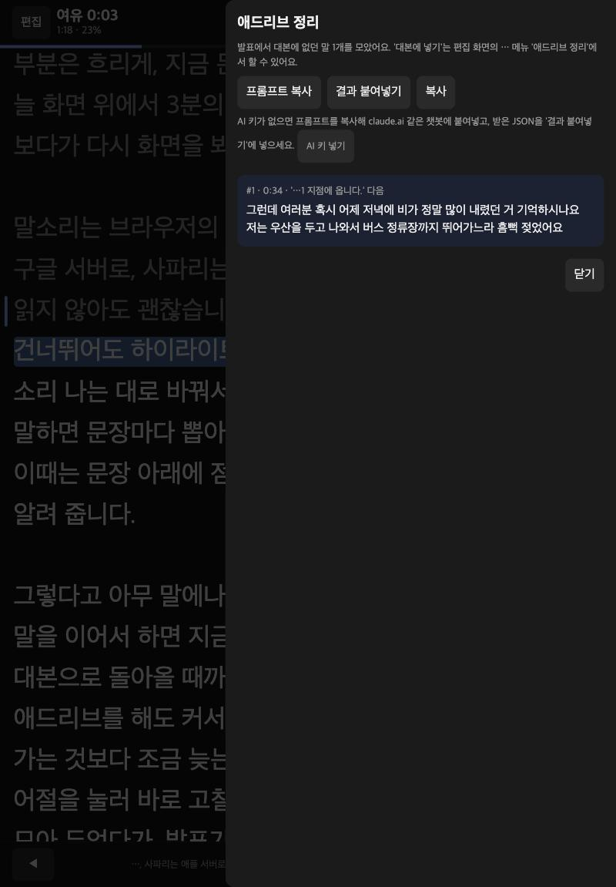
대본에 넣기
대본에 넣기는 편집 화면에서만 할 수 있습니다.
- 편집 화면 '⋯' 메뉴의 '애드리브 정리'를 누르세요.
- 넣을 항목의 '대본에 넣기'를 누르세요. 이미 넣은 항목은 '한 번 더 넣기'로 보입니다.
- '지금 대본과 비교: 더할 말'에서 초록 밑줄로 넣을 자리를 확인하세요. 애드리브 바로 앞 문장 뒤, 같은 문단 안에 들어갑니다.
- 창 아래 '적용'을 누르세요. 그만두려면 '취소'를 누르세요.
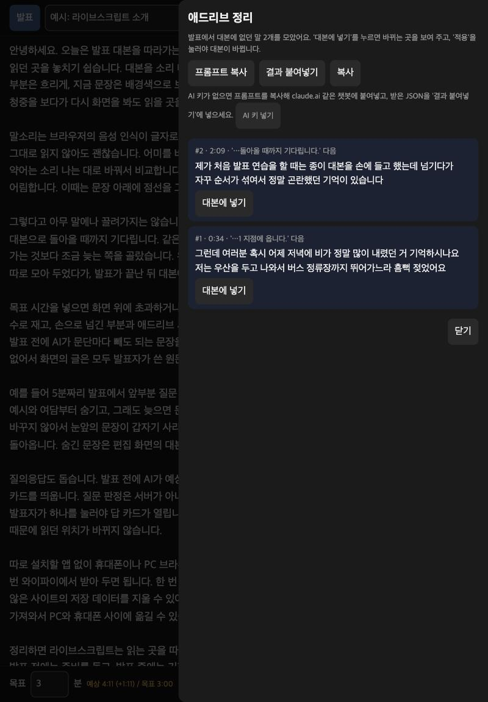
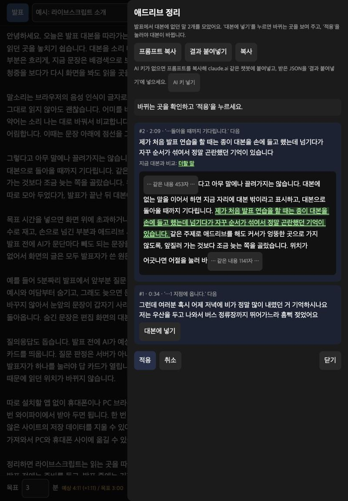
- 넣기 전 대본은 버전으로 남고, 어느 버전에 있는지 알려 줍니다. 되돌리려면 '⋯' 메뉴의 '버전 보기'에서 고르세요.
- 'AI 정리'를 하지 않았거나 AI가 '대본에 넣지 않아도 돼요'로 본 항목은 군말을 뺀 들은 말에 마침표만 붙여 그대로 넣습니다. 말을 다듬으려면 'AI 정리'를 먼저 하거나, 넣은 뒤 직접 고치세요.
- 대본이 바뀌므로 발표 위치는 처음으로 돌아갑니다. 넣은 말만큼 문장 수가 늘어나서, 자동 줄이기를 쓰려면 'AI 도구'의 '발표 준비'를 다시 해야 합니다.
'AI 정리'와 '복사'
- 'AI 정리'(키가 있을 때)나 '프롬프트 복사', '결과 붙여넣기'로 정리하면 항목마다 짧은 제목과 요점 1~3줄이 붙습니다. 그 아래에 '대본에 넣을 만해요: …' 또는 '대본에 넣지 않아도 돼요'가 나옵니다. 인사, 진행 말, 말실수를 고친 말은 넣지 않아도 되는 쪽으로 봅니다.
- AI에는 애드리브 글과 그 앞뒤 대본 문장만 보냅니다. 대본 전체는 보내지 않습니다.
- '복사'는 애드리브 전체를 오래된 것부터 글로 복사합니다. 메모나 과제 기록에 붙여 둘 때 쓰세요.
AI 기능과 키
AI 기능은 Anthropic의 Claude를 씁니다. Claude는 발표 전에 대본과 질문을 준비할 때와, 발표가 끝난 뒤 애드리브를 정리할 때만 씁니다. 발표 중의 따라가기, 자동 줄이기, 질문 고르기는 Claude에 요청하지 않습니다. 말소리를 글자로 바꾸는 일만 Apple(Safari)이나 Google(Chrome)이 합니다.
'AI 도구' 창
| 탭 | 하는 일 | 대본 |
|---|---|---|
| '새로 쓰기' | '주제', '청중', '목적·핵심 메시지', '목표 시간(분)', '말투', '슬라이드 개요 (한 줄에 슬라이드 하나)', '참고 자료 (선택)'로 대본 초안을 씁니다. 슬라이드 하나에 문단 하나로 씁니다. | '적용'을 누르면 전체가 바뀝니다 |
| '지시로 고치기' | '어떻게 고칠까요?'에 지시를 쓰거나 '30초 줄이기', '더 쉽게', '도입을 질문으로'를 누릅니다. 편집창에서 글을 골라 두고 창을 열면 '고른 문단만 고치기'가 켜집니다. | '적용'을 누르면 바뀝니다 |
| '발표 준비' | 늦어지면 뺄 문장과 키워드의 다른 말을 정합니다(시간 맞추기). | 바뀌지 않습니다 |
| 'Q&A 준비' | 'Q&A 준비' 창을 엽니다(질의응답). | 바뀌지 않습니다 |
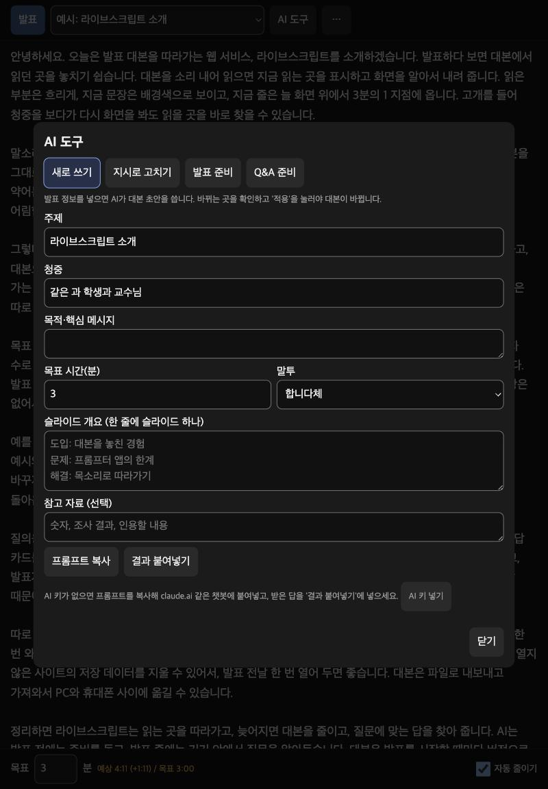
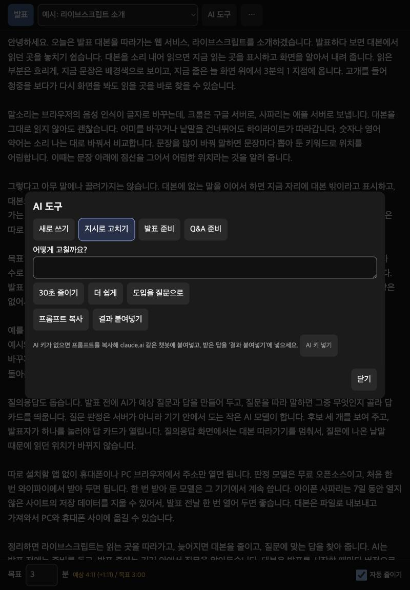
- 결과가 오면 '예상 m:ss / 목표 m:ss (+N%)'와 지금 대본과의 차이가 보입니다. 지울 말은 빨강, 더할 말은 초록입니다.
- '적용'을 눌러야 대본이 바뀝니다. 바뀌기 전 대본은 'AI 적용 전' 버전으로 남습니다.
- '새로 쓰기' 결과가 목표와 10% 넘게 다르면 '줄이기' 또는 '늘리기'가 나타납니다.
- AI에는 자료로 확인하지 못한 사실에 '[확인 필요]'를 붙이라고 요청합니다. 표시가 빠질 수도 있으니 숫자와 사실은 모두 직접 확인하세요.
- 하는 동안 버튼이 '멈추기'로 바뀝니다. 창을 닫아도 뒤에서 계속 받습니다.
- '새로 쓰기'와 'Q&A 준비'의 주제, 청중 같은 발표 정보는 대본마다 저장됩니다.
키 없이 쓰기
- 쓰려는 창에서 '프롬프트 복사'를 누르세요.
- claude.ai 같은 챗봇에 붙여넣고 답을 받으세요. iPad에서는 Safari 탭을 하나 더 열거나 챗봇 앱을 Split View로 옆에 두면 오가기 편합니다.
- '결과 붙여넣기'를 누르고, 받은 답을 칸에 그대로 붙여넣은 뒤 그 아래 '적용'을 누르세요.
- 대본을 바꾸는 결과면 비교를 확인하고 '적용'을 한 번 더 누르세요.
복사한 프롬프트에는 대본 전체나 발표 정보(애드리브 정리는 애드리브와 그 앞뒤 문장)가 들어 있어서, 붙여넣은 챗봇 서비스로 그 내용이 갑니다.
챗봇이 붙인 코드 블록 표시, 제목 줄과 '여기 대본입니다:' 같은 흔한 앞뒤 인사말은 앱이 지웁니다. 대본의 일부일 수 있는 말은 남기니 '적용' 전에 비교에서 확인하세요. 이 방법은 대본 쓰기, 고치기, 발표 준비, Q&A 준비, 애드리브 정리에서 모두 됩니다. '다른 말'만 키가 있어야 합니다.
'다른 말'
키가 있을 때 편집창에서 한 줄 안의 40자 이하 글을 고르면 아래 줄에 '다른 말' 버튼이 나옵니다. 누르면 대신 쓸 말 3개가 나오고, 하나를 누르면 그 자리만 바뀝니다. 바꾼 직후에는 버튼이 '되돌리기'가 되어 한 번 되돌릴 수 있습니다. 숫자, 영어, 고유명사는 바꾸지 않습니다.
AI 키 넣기
- 편집 화면 '⋯' 메뉴의 'AI 키'를 누르세요. 각 창의 'AI 키 넣기' 버튼으로도 열립니다.
- 'Anthropic API 키' 칸에 키를 붙여넣으세요.
- 이 기기에서 계속 쓸 때만 '이 기기에 기억 (끄면 이 탭을 닫을 때 지워집니다)'을 켜세요.
- '저장'을 누르세요.
- '이 기기에 기억'을 끄면(처음 값) 키는 이 탭에만 있고 탭을 닫으면 지워집니다. 켜면 이 Safari에 남습니다.
- '키 지우기'는 탭과 기기 양쪽에서 키를 지웁니다.
- 키가 있으면 'AI로 쓰기', 'AI로 만들기', 'AI 정리' 같은 버튼이 나타나고, 키가 없을 때의 안내 글은 숨습니다.
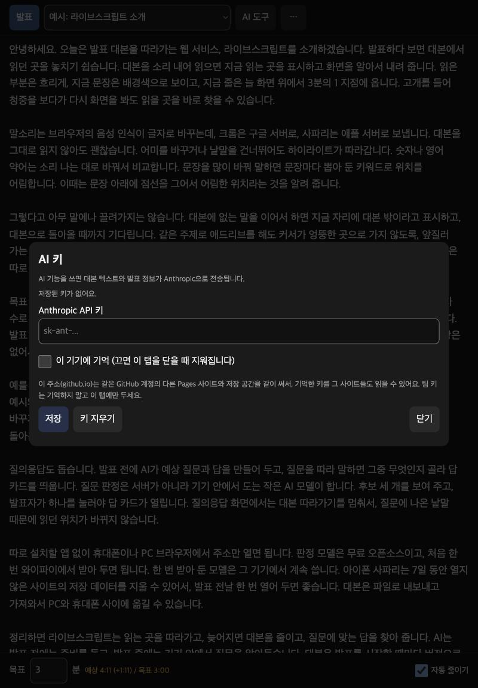
주의
'이 기기에 기억'을 켜면 같은 gepi2.github.io 주소 아래의 다른 사이트도 그 키를 읽을 수 있습니다. 저장 공간을 같이 쓰기 때문입니다. 여럿이 같이 쓰는 키나 선생님이 나눠 준 키는 '이 기기에 기억'을 켜지 말고 이 탭에만 두세요. 이 탭에 둔 키도 같은 탭에서 그 사이트들을 열면 읽힐 수 있으니, 다 쓴 뒤(특히 여럿이 같이 쓰는 iPad에서는) '키 지우기'를 누르세요.
비용과 보내는 데이터
- 키로 AI를 쓸 때마다 그 키의 Anthropic 계정에 사용료가 듭니다. 앱은 비용을 보여 주지 않으니 결제와 한도는 Claude Console에서 확인하세요.
- 보내는 것은 기능마다 다릅니다.
- '새로 쓰기': 발표 정보(주제, 청중, 목적, 말투, 개요, 참고 자료, 목표 시간)
- '지시로 고치기': 대본 전체와 지시
- '발표 준비': 대본 전체
- 'Q&A 준비': 대본 전체와 주제·청중
- '애드리브 정리': 애드리브와 그 앞뒤 문장
- '다른 말': 고른 말과 그 문장
- '다른 말'은 작고 빠른 모델을, 나머지 기능은 큰 모델을 씁니다(모델 이름은 404 오류 안내에만 나옵니다).
- 오류는 번호와 함께 이유를 알려 줍니다. 401은 키가 맞지 않을 때, 402나 지출 한도 안내는 크레딧이나 한도 문제, 429는 요청이 너무 많을 때(1분쯤 뒤 다시)입니다.
화면 방향과 멀티태스킹
배치는 기기 종류가 아니라 Safari 창의 폭으로 정해집니다. 그래서 같은 iPad라도 세로로 둘 때, 가로로 둘 때, 다른 앱과 화면을 나눌 때 모습이 달라집니다.
| iPad를 둔 모습 | 창 폭 | 발표 화면 |
|---|---|---|
| 가로로 둔 iPad 대부분(10.2형, 9.7형, 5세대까지의 7.9형 iPad mini는 아래 줄) | 1100px 이상 | 오른쪽에 애드리브 칸이 따로 생깁니다. |
| 세로로 둔 iPad, 10.2형·9.7형·7.9형 mini 가로, 가로 화면을 반으로 나눈 창 | 521~1099px | 한 열. 애드리브는 아래 줄 '애드리브 N' 버튼으로 봅니다. 상태줄에 진행률 글도 보입니다. |
| Slide Over, 좁게 나눈 창, 세로 화면을 반으로 나눈 창 | 520px 이하 | 한 열. 상태줄의 진행률 글이 숨고 진행 막대로만 봅니다. 420px 이하에서는 편집 화면의 '/ 목표'도 숨습니다. |
세로로 둘 때
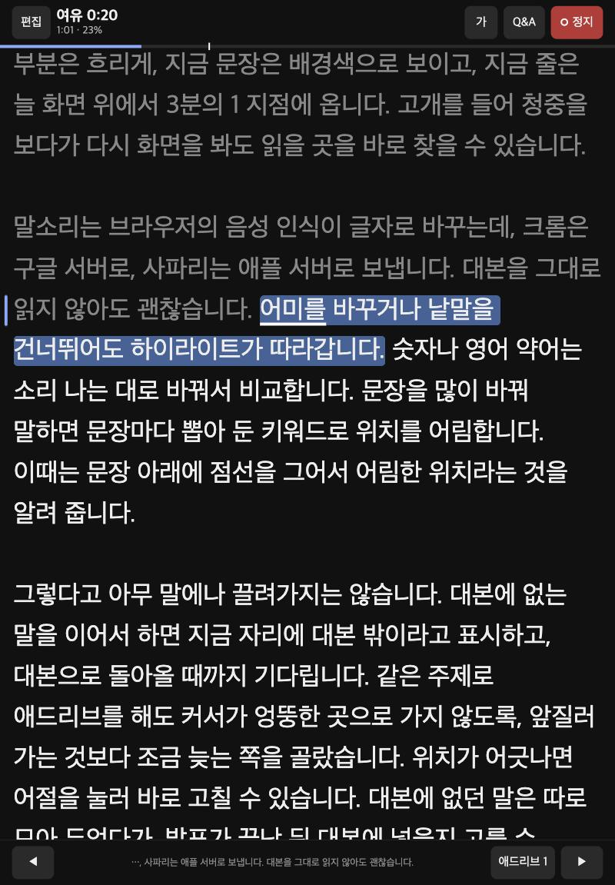
가로로 둘 때
- 창 폭이 1100px 이상이면 발표 화면 오른쪽에 '애드리브 N개' 칸이 생기고, 그 위에 '복사'와 '정리' 버튼이 있습니다. 아래 줄의 애드리브 버튼은 없어집니다.
- 가로 폭이 1100px보다 좁은 기종(10.2형 iPad는 1080px)에서는 가로로 두어도 '애드리브 N' 버튼으로 봅니다.
- 편집 화면은 폭을 다 써서 한 줄에 글이 더 많이 들어갑니다. 대본을 쓰거나 'AI 도구'를 쓸 때는 가로가 편합니다.
- 질의응답 화면은 가운데 900px 폭 안에 모여 보입니다.
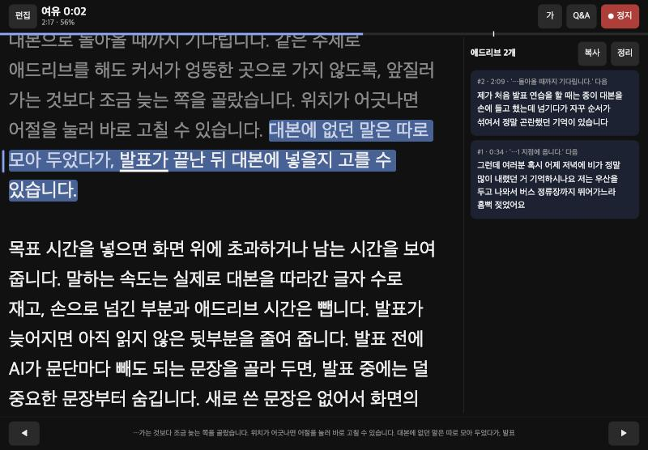
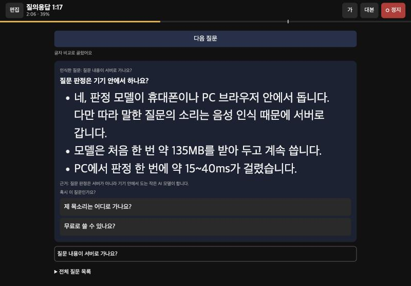
화면 나누기와 창 모드
- Safari 창을 다른 앱과 나누거나 작게 띄우면 그 창의 폭에 맞춰 배치가 바뀝니다(맨 위 표). iPadOS 버전에 따라 Split View, Slide Over, 스테이지 매니저, 창 모드처럼 이름이 다릅니다.
- Keynote나 PDF를 옆에 띄우고 발표할 수 있습니다. 다만 다른 앱 쪽을 만지고 있을 때도 Safari의 음성 인식이 이어지는지는 아직 확인하지 않았습니다. 이렇게 쓰려면 미리 리허설하세요.
- 키보드와 리모컨 키는 iPad가 지금 고른 창으로 갑니다. 다른 앱 창을 만진 뒤에는 키가 라이브스크립트로 가지 않을 수 있습니다.
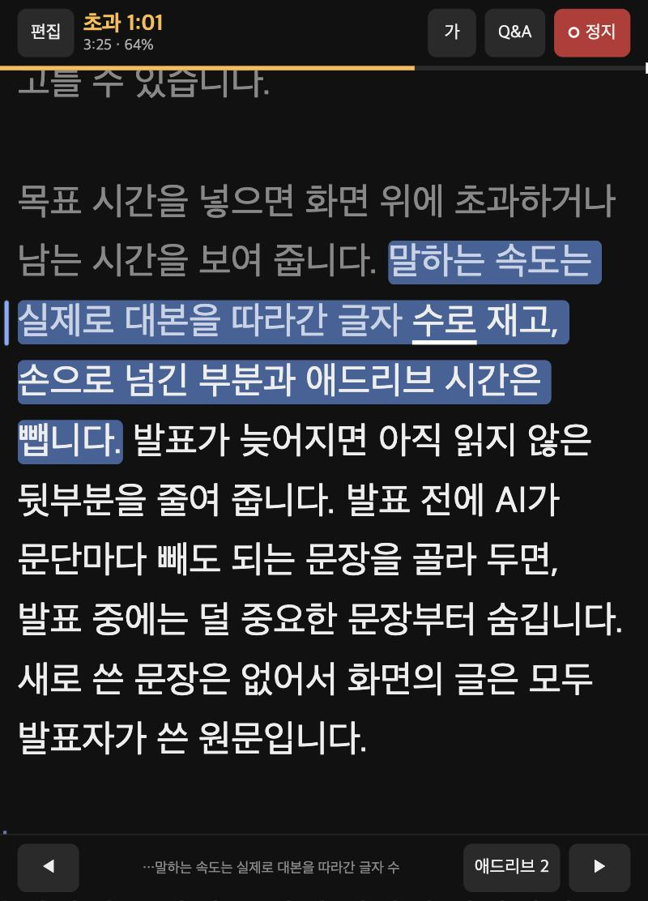
돌리거나 창 크기를 바꿀 때
- 기기를 돌리거나 창 크기를 바꾸면 지금 줄을 다시 화면 위에서 3분의 1 지점에 둡니다.
- 높이만 120px 이하로 바뀌는 정도(주소 막대가 숨거나 나올 때)는 손으로 내린 자리를 그대로 둡니다.
- 편집 화면이나 질의응답 화면에서 돌렸으면, 발표 화면으로 돌아올 때 맞춥니다.
- 발표 중에 화면이 돌지 않게 하려면 iPad 제어 센터에서 화면 회전을 잠그세요.
- iPad를 AirPlay(화면 미러링)나 HDMI로 프로젝터에 연결해 미러링하면 iPad 화면이 그대로 보여서 대본도 청중에게 보입니다. 앱은 연결한 화면에 다른 내용을 따로 띄우지 못하니, 슬라이드는 다른 기기로 띄우세요.
데이터와 개인정보
라이브스크립트에는 서버와 계정이 없습니다. 대본과 설정은 지금 쓰는 브라우저(iPad에서는 Safari) 안에만 저장되고, 다른 브라우저나 기기와 공유되지 않습니다. 다만 앱 주소(gepi2.github.io)는 같은 주소 아래의 다른 GitHub Pages 사이트와 저장 공간을 같이 써서, 그 사이트들이 이 저장 공간(대본 포함)을 읽을 수 있습니다.
저장되는 곳
| 무엇 | 어디에 | 사라지는 때 |
|---|---|---|
| 대본, 읽던 위치, 목표 시간, 발표 시간, 발표 정보, 질문, 버전, 발표 준비 결과, 자동 줄이기 상태, 애드리브 | 이 브라우저의 저장 공간(대본마다 따로, 모두 합쳐 약 5MB) | 직접 지우거나 브라우저 데이터를 지울 때. iPad Safari는 7일 동안 열지 않으면 지울 수 있음 |
| 글자 크기, 글 폭, 말 속도, 답 카드 바로 열기, JEV 설정 | 같은 곳(기기에 하나) | 같음 |
| AI 키 | 이 탭(처음 값) 또는 이 브라우저('이 기기에 기억'을 켰을 때) | 탭에 둔 키는 탭을 닫을 때, 기억한 키는 '키 지우기'를 누르거나 브라우저 데이터를 지울 때 |
| 인식 기록, 저장하지 않은 Q&A 수정 | 이 탭 | 탭을 닫을 때 |
| 판정 모델 | 브라우저 캐시 | 브라우저 데이터를 지울 때 |
밖으로 보내는 것
| 무엇 | 받는 곳 | 언제 |
|---|---|---|
| 말소리 | Apple(Safari) 또는 Google(Chrome) | 마이크가 켜져 있는 동안. 질의응답에서 따라 말한 질문도 포함 |
| 대본과 발표 정보 | Anthropic(키로 쓸 때) 또는 프롬프트를 붙여넣은 챗봇 서비스 | AI 기능을 쓸 때만 |
| 애드리브로 한 말과 그 앞뒤 문장 | Anthropic(키로 쓸 때) 또는 프롬프트를 붙여넣은 챗봇 서비스 | 'AI 정리'를 누르거나 프롬프트를 복사해 붙여넣을 때만 |
| 질의응답 질문 글 | 보내지 않음 | 판정은 기기 안에서 합니다 |
| 판정 모델 파일(e5, JEV를 켜면 JEV도) | Hugging Face에서 받음 | 기기마다 한 번 |
| 내보낸 대본 파일, 인식 기록 파일, qa-pack.json | iCloud Drive(Safari 다운로드 위치가 iCloud Drive일 때, 처음 설정) | '파일로 내보내기', '인식 기록 내려받기', '내보내기'를 누를 때 |
비슷한 안내가 앱의 '⋯' 메뉴 '데이터가 가는 곳'에도 있습니다. 누르면 내용이 보입니다.
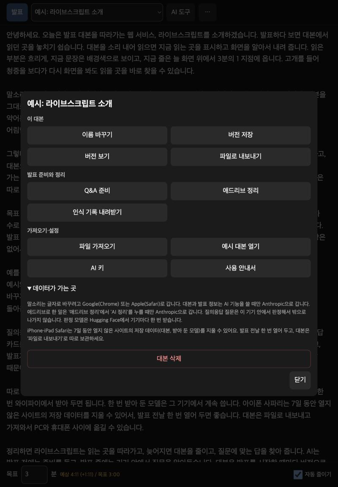
지워지지 않게 하기
주의
iPad Safari는 7일 동안 열지 않은 사이트의 저장 데이터(대본, 받아 둔 모델)를 지울 수 있습니다. 발표 전날 한 번 열어 두고, 대본은 '파일로 내보내기'로 따로 보관하세요.
- Safari의 개인 정보 보호 브라우징 창에서 쓴 대본은 창을 닫으면 사라집니다.
- 홈 화면에 추가한 앱은 Safari와 저장 공간이 따로라서 Safari에서 쓰던 대본이 보이지 않습니다. 홈 화면 앱에서는 음성 인식도 안 될 수 있으니 Safari에서 쓰세요.
- 다른 기기로 옮길 때도 '파일로 내보내기'를 쓰세요.
- 저장 공간이 차면 “이 기기의 저장 공간이 가득 차서 저장하지 못했어요. …”가 나옵니다. 쓰지 않는 대본을 지우고, 그동안 지금 대본은 다른 곳에 복사해 두세요.
인식 기록 내려받기
'⋯' 메뉴 '발표 준비와 정리'의 '인식 기록 내려받기'를 누르면 'livescript-log-날짜시각.json' 파일을 받습니다. 따라가기가 어긋났던 발표를 나중에 다시 확인하거나, 앱을 고치는 사람에게 문제를 알릴 때 씁니다.
- 들어가는 것: 대본 전문, 음성 인식이 받아 적은 말 원문(질의응답에서 따라 말한 질문 포함), 위치를 옮긴 기록(목소리, 키워드, 누르기, '◀', '▶', 되돌리기), 자동 줄이기 단계, 질문 판정과 고른 후보, 애드리브 목록, 브라우저 정보.
- 기록은 이 탭에만 있습니다. 탭을 닫기 전에 받으세요.
- 리허설 뒤 대본을 고쳤다면 고치기 전 대본과 그 발표의 기록을 받습니다.
- 대본 처음에서 '● 시작'을 누르면 새 발표로 보고 기록을 비웁니다.
보내기 전에
이 파일에는 대본 전체와 발표에서 한 말이 그대로 들어 있습니다. 남에게 보내기 전에 내용을 확인하세요.
문제 해결
“마이크 권한을 허용해 주세요”가 나와요
Safari가 이 사이트의 마이크를 막은 상태입니다. 설정›앱›Safari›마이크(iPadOS 17 이하는 설정 › Safari › 마이크)에서 허용하세요. 그다음 페이지를 새로고침하고 '● 시작'을 누르세요. PC Chrome에서는 주소창 왼쪽의 사이트 정보 아이콘을 눌러 마이크를 허용하세요.
“음성 인식이 꺼져 있어요”가 나와요
iPad의 받아쓰기가 꺼져 있을 때 나오는 것으로 알려져 있습니다(iPad에서 띄워 보지는 않았습니다). 설정›일반›키보드›받아쓰기를 켠 뒤 다시 '● 시작'을 누르세요. Android나 PC에서 나오면 Chrome으로 열었는지 확인하세요.
“Safari에서 열어 주세요”나 “이 브라우저는 음성 인식이 안 돼요”가 나와요
첫 글은 iPhone·iPad의 다른 브라우저나 홈 화면 앱에서 나옵니다. 같은 주소를 Safari에서 여세요. 홈 화면 앱은 저장 공간이 따로라서, 그 앱에서 쓴 대본은 '파일로 내보내기'로 옮기세요.
둘째 글은 브라우저에 음성 인식 기능이 없을 때 나오고, 마이크 버튼이 눌리지 않습니다. iPad는 Safari, Android와 PC는 Chrome으로 여세요. 그동안에도 '◀' '▶'와 어절 누르기로 넘길 수 있고, 질의응답의 채팅 질문 칸도 쓸 수 있습니다.
마이크 버튼에 '연결 중'이나 '다시 듣기'가 보여요
'연결 중'은 음성 인식이 잠깐 끊겨 다시 켜는 중이라는 뜻이고, 대개 저절로 돌아옵니다. 4초가 지나도 돌아오지 않으면 '다시 듣기'로 바뀝니다. 그 버튼이나 Space를 누르세요. 위치와 시간은 그대로입니다. iPad Safari는 끊긴 인식을 저절로 다시 켜지 못할 때가 있다고 알려져 있습니다. 자주 생기면 인터넷 연결을 확인하세요.
하이라이트가 따라오지 않거나 늦게 따라와요
앱은 들은 말과 대본 글자를 맞춰 따라갑니다. 어미를 바꾸거나 낱말 몇 개를 건너뛰는 정도는 따라가지만, 문장을 많이 바꿔 말하면 놓칠 수 있습니다.
- 아래 줄의 들은 말을 보세요. 비어 있으면 마이크나 음성 인식 문제입니다. 글자는 나오는데 따라오지 않으면 대본과 다르게 말한 것입니다.
- 문장 전체에 흰 점선 밑줄이 있으면 키워드로 짐작한 위치입니다. 대본대로 읽으면 글자 비교가 다시 맞고 점선이 사라집니다.
- 바로 고치려면 읽을 어절을 누르세요.
- 앱은 확인 없이 한 번에 30글자까지만 앞으로 갑니다. 앞질러 가는 것보다 조금 늦는 쪽을 골랐기 때문입니다. 문단을 통째로 건너뛰었다면 '▶'나 어절 누르기로 옮기세요.
- '발표 준비'를 해 두면 키워드를 다른 말로 말해도 따라갑니다.
리모컨이나 키보드로 넘어가지 않아요
- 리모컨이나 키보드가 iPad에 블루투스로 연결되어 있는지 설정›블루투스에서 보세요. 목록에 없으면 리모컨을 연결 모드로 켜고 나온 이름을 누르세요.
- 키는 발표 화면에서만 동작합니다. 편집 화면, 질의응답 화면, 열린 창 안에서는 동작하지 않으니 창을 닫으세요.
- Split View로 다른 앱을 옆에 두었다면 키가 그 앱으로 갈 수 있습니다.
- 전체 화면에서 키가 안 들어오면 '가'에서 전체 화면을 풀고 해 보세요.
“인터넷 연결을 확인해 주세요”가 나와요
음성 인식 서버에 닿지 못할 때 나옵니다. 앱은 계속 다시 시도합니다. 와이파이 연결을 확인하고, 연결이 돌아올 때까지는 손으로 넘기세요.
발표 중에 화면이 꺼져요
앱은 발표 화면에 있는 동안 화면이 꺼지지 않게 요청하지만, iPad에서 통하는지는 확인하지 않았고 절전 설정에 따라 통하지 않을 수 있습니다. 발표 전에 설정›디스플레이 및 밝기›자동 잠금에서 시간을 늘리세요. 다른 탭이나 앱에 다녀오면 앱이 다시 요청합니다.
대본이 사라졌어요
- 편집 화면 위 대본 고르기 상자에 다른 대본이 있는지 보세요. 예시 대본을 열면 새 대본이 따로 생깁니다.
- 같은 기기, 같은 브라우저인지 확인하세요. 대본은 연 브라우저에만 저장됩니다. 홈 화면 앱과 Safari도 서로 다른 저장 공간입니다.
- 대본을 잘못 고쳤으면 '⋯' 메뉴의 '버전 보기'에서 되돌리세요.
- 개인 정보 보호 브라우징 창이었거나 Safari가 7일 동안 열지 않은 데이터를 지웠다면 되살릴 수 없습니다. 내보내 둔 파일이 있으면 '파일 가져오기'로 여세요.
판정 모델 받기가 안 돼요
- 와이파이에 연결하고 '다시 시도'를 누르세요.
- 'Q&A 준비' 창의 '판정 모델' 칸에 “지난번에 모델을 불러오다 멈췄어요. 이 기기에서는 자동으로 불러오지 않아요.”가 보이면 '다시 시도'를 누르세요. 또 멈추면 이 기기는 메모리가 모자랄 수 있으니 모델 없이 글자 비교로 쓰세요.
- 같은 칸에 “… 페이지를 새로고침한 뒤 다시 시도해 주세요.”가 보이면 새로고침하세요. 받아 둔 모델이 있으면 발표 화면에 들어갈 때 저절로 불러옵니다. 받기 버튼이 다시 보이면 그 버튼을 누르세요. 질의응답 화면에서는 '판정 모델 받기 (약 135MB, 와이파이 권장)', 'Q&A 준비' 창에서는 '모델 받기 (약 135MB, 와이파이 권장)'입니다.
- 모델이 없어도 글자 비교로 고르므로 질의응답은 그대로 쓸 수 있습니다.
질의응답 후보에 맞는 질문이 없어요
- 1순위가 틀릴 수 있으니 후보 3개를 모두 보고 고르세요.
- 맞는 것이 없으면 '해당 없음'을 누르고 '전체 질문 목록'에서 검색하세요.
- 자주 틀리는 질문은 'Q&A 준비'에서 그 질문의 '바꿔 묻는 말'에 청중이 쓸 만한 표현을 더하고 '저장'하세요.
- 판정 모델을 받아 두면 낱말이 달라도 뜻이 비슷한 질문을 고를 수 있습니다.
'자동 줄이기'가 동작하지 않아요
- 목표 시간이 있고 '자동 줄이기'가 켜져 있는지 보세요.
- “자동 줄이기는 지금 대본으로 한 '발표 준비' 결과가 있어야 해요. …”가 나오면 'AI 도구'의 '발표 준비'를 다시 하세요. 문단이나 문장 수를 바꾸면 이전 결과가 맞지 않게 됩니다.
- 듣는 중에만, 지금 문단이 바뀔 때 다시 계산합니다. 지금 위치에서 약 300글자 안은 바꾸지 않으므로 대본 끝에 가까우면 줄일 곳이 없을 수 있습니다.
앱을 열면 바로 발표 화면이 나와요
대본이 있으면 발표 화면으로 열립니다. 편집 화면은 왼쪽 위 '편집'을 누르면 나옵니다. 대본에 '[확인 필요]'가 남아 있으면 열 때 알림이 나옵니다.
발표 시간이 처음부터 다시 재져요
대본 처음에서 '● 시작'을 누르거나 대본을 고치면 새 발표로 봅니다. 중간부터 이어 하려면 대본을 고치지 말고, 위치가 처음이 아닌 상태에서 '● 시작'을 누르세요.
“저장 공간이 가득 차서”가 나와요
이 브라우저의 저장 공간(약 5MB)이 찼습니다. 필요한 대본은 '파일로 내보내기'로 받아 둔 뒤, 쓰지 않는 대본을 '대본 삭제'로 지우세요. 앱은 공간이 모자라면 오래된 버전부터 지웁니다.
알아 둘 한계
- 따라가기는 들은 말과 대본 글자를 비교합니다. 글로 적은 문장을 음성 인식 결과처럼 넣어 시험했습니다(7문장, 12문장 대본 두 개). 말한 어절 가운데 커서가 맞는 문장에 있던 비율은 대본대로 읽기 100%, 조금 바꿔 읽기 84~87%, 많이 바꿔 읽기 24~42%였습니다.
- 질문 판정은 글로 적은 시험 질문 30개로 쟀습니다(만든 사람이 직접 만든 질문입니다). 판정 모델의 1순위가 맞은 것은 24개, 후보 3개 안에 든 것은 28개였습니다. 그래서 후보 3개 가운데 발표자가 고르는 것을 기본으로 두었고, 답 카드 바로 열기는 처음에 꺼져 있습니다.
- 애드리브가 다음 문장의 키워드로 끝나고 곧바로 그 문장을 읽거나, 애드리브 뒤 30글자 안쪽을 건너뛰고 읽으면 애드리브 끝부분이 잘릴 수 있습니다. 키워드로 두 번 옮긴 애드리브는 앞부분이 빠지고 넣을 자리가 한 문장 뒤를 가리킬 수 있습니다.
- 지금까지의 확인은 데스크톱 브라우저에서 흉내 낸 음성 인식과 가짜 AI 응답으로 했습니다. 실제 iPad와 마이크, 실제 Claude 키는 아직 쓰지 않았습니다.
- iPad에서 아직 확인하지 않은 것: Safari 음성 인식이 끊기는 간격과 저절로 다시 켜지는지, '다시 듣기'가 얼마나 자주 필요한지, 전체 화면에서 리모컨 키와 Space, 화면 꺼짐 방지, 화면을 나눠 Safari가 아닌 창을 쓸 때 인식이 이어지는지, 판정 모델 속도와 메모리, JEV 모드, 처음 글자 크기 34가 적용되는지, 화면을 당겨 새로고침하는 동작이 막히는지, 받아쓰기를 끈 상태의 안내와 다른 브라우저에서 나오는 “Safari에서 열어 주세요” 안내가 실제로 뜨는지, 전체 화면이 켜지는지, 받은 파일이 어디에 저장되는지.
- AI 응답 시간과 비용은 실제 키로 재지 않았습니다.
- 저장 공간은 브라우저마다 약 5MB이고, iPad Safari는 7일 동안 열지 않은 사이트의 데이터를 지울 수 있습니다.
- '다른 말'은 AI 키가 있어야 합니다.
다른 기기에서
같은 주소를 다른 기기에서도 엽니다. iPad와 다른 점만 적었습니다.
iPhone
- Safari로 여세요. 다른 브라우저나 홈 화면에 추가한 앱에서는 음성 인식이 안 될 수 있습니다.
- 설정할 곳은 iPad와 같습니다. 받아쓰기는 설정 › 일반 › 키보드 › 받아쓰기, 마이크는 설정 › 앱 › Safari › 마이크(iOS 17 이하는 설정 › Safari › 마이크)입니다.
- 처음 글자 크기는 28입니다.
- 좁은 화면이라 상태줄의 진행률 글이 숨고, 폭이 420px 이하인 기종에서는 편집 화면의 '/ 목표'도 숨습니다. 진행은 막대로 보세요.
- 애드리브는 아래 줄 '애드리브 N' 버튼으로 봅니다.
- '가' 창에 '전체 화면'이 없습니다.
- 세로 화면에서는 '글 폭'의 '좁게'도 화면보다 넓어서 세 버튼의 차이가 보이지 않습니다.
Android 휴대폰과 태블릿
- Chrome으로 여세요. 삼성 인터넷이나 카카오톡 같은 앱 안의 화면에서는 음성 인식이 안 될 수 있습니다.
- 말소리는 Google 서버가 글자로 바꿉니다.
- 처음 글자 크기는 휴대폰 28, 태블릿(터치 화면이면서 화면 짧은 변이 600px 이상) 34입니다.
- 태블릿 배치는 iPad처럼 창 폭으로 정해집니다.
PC
- Chrome으로 여세요.
- 편집 화면이 넓어서 대본을 쓰고 'AI 도구'를 쓰기에 알맞습니다. 처음 글자 크기는 28입니다.
- 창 폭이 1100px 이상이면 발표 화면 오른쪽에 애드리브 칸이 있고, 상태줄에 진행률 글도 보입니다.
- 키보드 단축키와 '전체 화면'을 쓸 수 있습니다.
- JEV 모드(실험)는 PC Chrome에서만 권합니다.
- PC에서 준비하고 iPad로 발표하는 방법은 대본 준비의 '파일로 옮기기'에 있습니다.